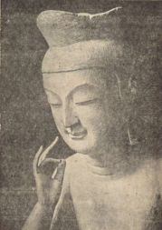
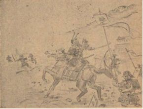

| 改訂版 ぼくらの歴史教室 | |
| 清水 三男 | |
| (2018) | |
表紙カバー写真 山田寺 出土の金堂創建瓦 軒丸瓦、四重弧文軒平瓦
画像提供元 奈良文化財研究所
改訂版の発刊に当たって
この本は、太平洋戦争の局面が悪化し始めた昭和１８年 （１９４３年） ２月に出兵していく歴史家清水三男が、その直前に青少年向けに書き残した歴史入門書です。日本の歴史は私たち日本人の中にあり、その歴史を知っていなければならないことを分かりやすく書いています。戦時下にもかかわらず常に多面的に考察した歴史観は、今もなお新鮮です。清水は、原稿を弟、浩に渡し、この本の出版を見ずに、中国大陸に出兵し、昭和２０年８月２１日、ソ連軍との千島列島の 占守島（しゅむしゅとう）の戦い で、終戦を迎え、昭和２２年１月にシベリアの抑留先パルチザンスク （旧スーチャン） で病死しています。
できるだけ原本を残しましたが、読みやすくするため、現代仮名遣い、新漢字に変換しています。また、電子本の便利さを活かすために、多くの事項をハイパーリンクで、容易に解説、写真などを見ることができるようにしました。さらに説明が要るところは、 （説明） を、青字で記載しています。
多くの青少年に、日本史の教科書の副読本として読んでもらえるように無料としました。ぜひ、皆さんの友人にもご紹介していただければ幸いです。
清水三男研究会
菊地 俊郎
原本表紙
国立国会図書館オンラインより引用
タイトル ぼくらの歴史教室
著者 清水三男 著
著者標目 清水, 三男, -1947
シリーズ名 ぼくらの文庫 ; [1]
出版地（国名コード） JP
出版地 京都
出版社 大雅堂
出版年 1943
大きさ、容量等 200p 図版 ; 19cm
JP番号 45011906
出版年月日等 昭和18
原本 巻頭掲載写真
Our History of Japan
目次
皆さんの中には歴史の好きな人も、また嫌いな人もいるでしょう。嫌いな人は恐らく私たちに関係のない昔の人の難しい名前や事件を暗記するのがつらくて嫌いになったのでしょうし、好きな人もおとぎ話や夢物語を聞くつもりで楽しんでいるのだと思います。しかし、本当の歴史というものはそんなものではありません。飛行機や戦車を作る学問と同様に、現代の生活に必要な学問なのです。そんな馬鹿なことがという方がおられましたら、この本をゆっくり読んでみてください。必ず思い当たることがあるでしょう。このようにこの本は皆さんと歴史の切っても切れない関係を教え、皆が歴史を好きになるように書いたものです。おとぎ話のように面白くはないかもしれませんが、教科書のように堅苦しくはないと思います。甘いお菓子ばかりたべていては身体を作ることができないように、だた、面白いものばかりを読んでいては、真の日本人にはなれません。どうかそのつもりで終わりまでよく読んでください。必ず得るところがあり、喜んで頂けると思います。
この本は、私が下書きをして弟に直してもらいました。私の弟は三高 （注 旧制第三高等学校） の陸上競技の選手をしていましたが、自分の身体には無理な練習生活をしましたので、丸7年間も病床に釘付けになり、近頃やっと人並みに歩けるようになりました。皆さんもどうか身体を大切にしてください。
また、赤松俊秀様・清水光様・富阪健様・藤岡謙二郎様・飛鳥園などの方々は、この本のために貴重な写真を貸してくださいました。厚くお礼を申し上げます。
昭和１８年２月１５日
清水三男
（説明）
赤松俊秀 ：京都帝国大学文学部史学科に進み、三浦周行・西田直二郎・中村直勝らに学ぶ。同期に清水三男がいる。1931年京都帝国大学文学部史学科卒[2]。京都府嘱託・主事として、府下の社寺宝物や史跡の調査に従事。1949年京都府教育委員会文化財保護課の初代課長。東寺百合文書のうち、東寺にて放置されたままであった文書群の存在を確認してその解読にあたり、その成果を｢東寺百合文書」として発表する。（後年に発表論稿を含めて『教王護国寺文書』として平楽寺書店から刊行する。）その成果もあり1951年母校京大の助教授に転じ、1953年教授に就任。1974年に紫綬褒章を受章。
藤岡謙二郎 ：1938年京都帝国大学文学部副手、1939年立命館大学講師、1945年立命館大学法文学部助教授、教授を経て、1949年京都大学教養部助教授、翌年教授。日本における歴史地理学の先駆者。
飛鳥園 ：仏像写真など文化財の撮影を専門とする写真館。
清水浩 ：1914年10月2日生まれ。清水三男の弟、旧制第三高等学校在学中に結核で休学。1949年11月9日死去。
今まで迎えた春の中で一番うれしい春であった。背中に金文字の入った英語の本、美しい挿絵のある国語読本。僕はまだ学校が始まらないうちから、毎日開いて見て楽しんだ。お父様は中学入学のお祝いに時計を買って下さり、伯父様は立派な本立てをくださった。
４月５日に入学式があった。受け持ちの先生は小川先生という、若い元気な先生で、僕たちには国史を教えていただくことになっていた。先生のご訓示によると、中学ではもう国民学校 （現在の小学校） のように手を取り、足を取るような親切な教え方はしないから、自分でしっかり大人になったつもりで、なんでもやらなければならないとのことだった。
実際授業が始まると、どの先生も不親切で、僕たちに構っては下さらないという感じがした。
小川先生の説によると、「いつまでも先生や両親に甘やかされていては一人前の人間になれないから、わざと構わないのだ」と。しかし、小川先生は僕たちの組担当だけに他の先生よりずっと親切だった。教室へ岩波文庫の 「クオレ」 や丹那トンネルを掘った有馬技師さんの「 トンネルを掘る話 」という本や、ドイツのケストナーという人の書いた「 少年探偵エミール 」という本や、夏目漱石先生の「 坊ちゃん 」などを持ってきて貸して下さるし、掃除の時も僕らと一緒になってよく手伝って下さるし、その上今日習ったところでわからないことはないかと掃除の終わった後で聞いて下さったりする。ただ、日記をつけることを喧しく言われることだけが嫌だ。何もそう毎日書くことがないのに困ってしまう。
始まって３日目に先生の国史の時間が初めてあった。
先生の授業は変わっていた。確かに僕たちの度胆を抜いた。だって国史の教科書の最初に書いてある１ページ余りの歴史を学ぶに当たっての心構えについて記したところを、面白く１時間中しゃべって僕たちを煙に巻いてしまったんだもの。
まず、最初に先生は、「歴史って何か知っている者？」と尋ねられた。
皆元気よく手を挙げた。前の方にいる鈴木君が一番どの先生の目にもつくと見え、同君に当たった。
鈴木君は「ハイッ」と言って元気に立ち上がり、大きな声で分かりきったこと、と言わんばかりに
「昔のことを書いた本のことです。」
と答えた。
「昔っていつ頃から前が昔ですか。昨日や一昨日も昔だし、５年１０年前も昔だし。」
なるほど、これには僕たちも弱った。ちゃんと歴史の教科書には「現代の情勢」として一昨年の １２月８日の宣戦 のご詔勅のことまで出ている。この調子で行けば、今朝にでも第四次 ソロモン海戦 でもあれば、今朝のことまで歴史の本に書けるわけである。
しばらくして、先生はおっしゃった。
「諸君は、歴史は昔のことを研究するものと考えているが、歴史という学問は決して過ぎ去ってしまった昔ばなしを追懐する年寄りの思い出話のごときものではない。
現在だって歴史の中にあるし、未来だって歴史の中にあるのだ。歴史は動いているものを動いているままに見る学問だ。諸君は自分自身というものは自分の力で生きているもののように思っているだろう。しかし、よく考えてみたまえ。諸君が生まれていなかった時代というものがあるのだ。
諸君はお父さん、お母さんがあって生まれ、育ってきたのだ。諸君の身体は諸君のものであって、諸君のものではない。諸君の身体は諸君のお父さんお母さんから頂いたのだ。赤ん坊の時はオギャオギャと泣くばかりだった。それからだんだん言葉を教わってものが言えるようになり、考えることができるようになり、自分で自分が生きているということが分かるようになったのだ。死ねば世界が消えてなくなるように思い、死ぬのが恐ろしいように思っている者もいるかもしれんが、諸君が生まれぬ前はもちろん、生まれて二年三年は、自分で生きていると考えている、その『自分』というものがまだこの世にはなかったのだ。それが今では親の有難さも忘れて『親父は頭が古い』なんて生意気を言うこともあるようになったのだ。このように諸君自身が歴史を持ち、諸君自身が歴史により作られている。諸君が今日こうして中学校で勉強しているのも、明治維新という大事件があって、教育が盛んになったおかげである。もし、明治維新がなかったら、今頃諸君はまだちょんまげを結っているか、英国人にこき使われていたかも知れん。諸君が生まれてきて、このように生きているということは、言わば日本歴史の総計がそれを形作っているといってもよいのだ。諸君の血も肉も我々日本人の祖先たちが苦闘して護り続けて来たのだ。長い日本の国家生活の作り上げた所産の一つが諸君なのだ。日本歴史はだから君たちの身体の中に動いているのだ。いくら諸君が、歴史が嫌いだ、親父が嫌いだと言っても、親父なしには、歴史を離れては、諸君の身体も精神も今日あるはずがないのだ。」
小川先生は夢中になってしゃべり続けた。
僕らも思わず耳を澄まし、すっかり魂を奪われ、飛行機に乗って遠い世界の果てへでも飛んで行ったような気がした。我々日本人は兄弟だということ、お互いが日本の国家の一部をなしているのだということ、 楠木正成 や 山田長政 の身体に流れていたと同じ血が我々の身体に今も生きて流れているのだということが本当に分かったような気がした。 「そうだ。歴史は僕らの身体の中にあるのだ。」
小川先生は変わった宿題を出す。例えば、「人間の歴史と山や川や動植物の歴史とどこが違うか考えて来い」と言うのだ。『参考書なんかにも書いていない宿題を出されては困ります』誰かがそう言って訴えたら、先生は無慈悲 （むじひ） にも「君たちは参考書を写したら勉強だと思っている。参考書を写したのでは習字の稽古にはなっても、歴史の学問にはならぬ。本当に自分で考えるのでなければ自分のものにならない。人まねはおサルの仕事だ。君たちはもう立派に一人前の人間になろうとしている。いつまでも他人の知恵に頼っていてはならない。自分で苦しんで考えるのだ。参考書はそのうえで役立てるのだ。」と突っぱねられた。その代わり先生は友達同志相談するのはいいとおっしゃった。「お互いに励ましあい助け合って、知識を磨き、身体を鍛える心掛けが肝心だ。そうしてこそお互いに学友と言えるのだ。」と。別に宿題で点を取るのではないそうだ。僕たちの組は５０人で、５人ずつ１班になっている。掃除当番がこの班によって回ってくる。先生は宿題もこの班に課した。各班で研究したところを持ち寄るのだ。
そして、各班の競争にするということだ。班員は自分の班のために案を練る。そして班ごとに答案をつくるようにとおっしゃった。そこで僕たちの班は、班長の青木君のところに次の日曜日に集まってこの宿題について相談した。班員は僕の他に佐藤君と佐々木君と今井君で、学校外で班員が集まるのは、この日が初めてであった。
学校の班員は教室の席で定められていて、通学区域による隣保班 （りんぽはん：隣近所） とは別なので、今までまだお互いの家に遊びに行くということはなかった。やがてその日が来た。約束の９時には皆揃ったので、青木君がさあ始めようと言って、まず自分の意見を述べた。
「僕は人間の歴史はこの間小川先生はおっしゃったように、祖父から父に。父から子にと受け継いでいく精神というものがあるが、山や川はただ変わっていくばかりで、一貫した精神というものがないと思う。これが一番大きな違いだろうと思う。」
といって皆の顔を見回した。さすがに班長さんだけあって良いところに気が付いたと思った。しかし、僕にはその精神ということがなんだかはっきり分からないので、「精神を受け継いでいくという『精神』とは一体どんなものか知らん。草や木にも親子関係はあるのではないか。まして動物には親子の情もある。これらと人間の違いは精神のあるなしだと修身の先生から教わった。しかし、人間の精神と動物の知恵や情というものは、どんなふうに違うのだろうか。」
と皆に聞いてみた。「うーん」、と佐藤君も佐々木君も唸った。そして「難しいな」とうような顔をして黙っている。
やがて今井君が「そうだ」と言って口を切った。
「この間僕はお父さんに連れられて、ニュース映画を見に行ったのだが、その時 『慈悲心鳥（じひしんちょう）』という文化映画 が一緒にあった。慈悲心鳥なんてもったいないような名前を付けてもらっているくせに、この鳥が厚かましい小鳥で、 コルリ という小鳥の巣に卵を預けるのだ。コルリの継母に温められて、慈悲心鳥のヒナは、コルリの本物の卵やヒナを追い出してしまう。いったん巣の外に放り出された卵やヒナは、コルリの親はもうそれを自分の子とは思わないそうだ。それで、コルリの親は自分のヒナを顧みずに、慈悲心鳥のヒナだけを一生懸命に育てるのだ。
小鳥の親の情はこうしたものだ。人間にはこんな馬鹿な親はいないだろう。つまり小鳥がヒナを育てるのは本能で機械的にやっているだけで、自分の子がすり替えられてもお構いない。人間の情はこんな本能だけではないのだ。」
なるほど今井君はよいことを思いついてくれた。ところで「本能だけでない人間の精神とはどんなものか知らん。」と考えていると、青木君が「そうだ。草木や動物は自然のままに動いている。しかるに人間は自分で目的をもって動いている。僕がぼんやり精神といったのは、目的とか理想とかを持つということだろう。」
青木君は頭がいい、草木や動物の世界には、目的を立てて仕事をすることがなさそうだ。ところがこれには今井君から抗議が出た。
「 ファーブルの昆虫記 の話だったかに、アリやミツバチが人間の社会生活に似た共同生活を営み、冬のために食物を貯えたり、目的を持った仕事をやっていることを聞いたが。」こうなると僕にはわからない。佐藤君も佐々木君も相変わらず黙っている。しばらく皆困ったような顔をして考え込んだ。
やがて一番おとなしい佐々木君が
「僕も動物にも目的をもって仕事をすることがあると思う。蜘蛛が網を張って虫を取ったり、蛇が大きな卵を呑むと、高い木から落ちて身体を石にぶつけてうまく卵を割ることなども見たことがある。しかしこうしたどうぞよろしくお願いの知恵によって動物の世界が立派になって行った話は聞かない。蜘蛛はいつまでたっても同じような網しか作らない。人間のように次から次へと立派な織物を工夫して作っていくということはない。動物は天から与えられた知恵に従っているのみで、自分の計画で動いているのではない。」
今井君が続いて
「結局、慈悲心鳥がコルリの巣に自分の卵を預けるのも、コルリをだましてやれと思っているわけではないんだね。人間から見るといかにもずるいように思うけれど、慈悲心鳥自身は、そんな悪気があってやるわけではないかも知れないね。慈悲心鳥のヒナがコルリのヒナを身体で巣の中から押し出すところなんか、バケモノの力士の様で慈悲心鳥のヒナが憎たらしかったが、考えてみれば、目も見えないヒナに、コルリのヒナを押し出して巣を占領してやれ、なんて考えないはずだ。持って生まれた本能で動いているのが、その生活目的に合うだけのことなんだね。」
青木君も元気づいてきて
「そうだ。いくら賢くてもサルはサルだ。人間のように火を使ったり、道具を作ることは知らないと、岩波文庫にあるコフマンという人の『世界人類史物語』という本に書いてあったっけ。動植物の世界に目的を持った動きがあるように思うのは、人間世界の気持ちを彼らの生活の中に入れて解釈するからだ。人間のように自分で自分のやることを知って、計画的にやる者は他の世界にはないのだ。山や川や動植物の世界は進化があっても、進歩はない。自分の力で自分たちの世界をよりよくしようとするところに人間の歴史があるのだろう。」
僕らの相談は大体こんなところで終了した。習字や作文の上手な佐藤君が、僕らの考えたことをまとめて作文用紙に書いてみてくれた。
「山や川にも歴史がある。虫や木にも歴史がある。しかし、彼らの歴史は自分の考えがあって自分の力で作った歴史ではない。進化や変遷はあっても、進歩や文明というものがない。それに対して人間の世界には自分の考えで自然に力を加えてこれを変えて行くということがある。サルは賢くても原始林を切り開いて畑を作ることはしない。せいぜい柿の実を岩陰に隠しておいて、自然の力でサル酒を作るくらいである。しかるに人間は自分たちの生活を一層立派にしようと思って工夫をする。そこに進歩があり、歴史がある。
一年い組三班」
これを青木君が皆の前で読み上げて
「これで良いかね。」と意見を求めた。皆満足そうにニコニコ顔で賛成した。本当にほっとした。
これで難しい宿題の答案ができたのだ。僕一人で考えていたら恐らくいつまでたってもこんなよい考えは浮かばなかったろう。お互いに助け合ってこそこの世の中はよくなる。進歩する。人間が動物より偉いところはここにあるのだ。僕はそう思ったので、皆に
「これから英語や代数なんかもお互いにこうやって研究しようではないか。日曜日ごとにお互いの家を順番に廻って仲良く勉強をすることにしては。」と提議した。
「それはいいことに気が付いた。お互いに持っている本を貸しあったり、お互いのお父様や兄様の知恵も借りあって、五人が揃って勉強することにしたいね。」
とまず青木君が賛成してくれた。皆もうなずいた。
これが機縁になって僕たち五人は急に仲良しになった。この次の日曜日は、僕の家で模型飛行機の組み立てをして遊ぶことに決めて、お昼前に散会した。
この話をかえってお父様にしたら非常に喜んでくださった。そして次の日曜日のために何か良いことを考えておいてやる、と仰った。
それから二週間ばかりして習字の中川先生がお休みになった時、その時間を利用して小川先生がこの間の宿題の討論会を開いてくださった。
僕たちの班は青木君と今井君がこの間考えた人間と動植物の違いについて大いに奮闘してくれた。皆いろいろな本を読んだり、いろいろなこと聞いたりして来たのに感心した。僕ももっと本を読んで考えねばならないと思った。僕たち五人で考えた時もそう思ったのだが、こうやってクラス討論をすると一層協力ということがどれだけ我々の知識を増し、生活を豊かにするかということを感じさせられた。また、僕らは自分がまるで学者になったような誇りを感じ、不思議な今まで知らなかった一種特別なうれしさを感じた。
一番問題になったことは地球の歴史や宇宙の歴史と人間の歴史の関係であった。つまり、地球の歴史と人間の歴史がつながるものか、地球の成立の歴史から動植物の発生、人間の歴史が引き続き出てくるか、地球が滅んだら人間の歴史はどうなるのかという問題であったが、僕らにはとても考えられない難問であった。
そこで最後に小川先生が解決してくださった。
すなわち地球の成立から動植物の発生につながる人類の歴史というものは考えられるが、それは人間の歴史ではなく、動物の一種としての人間の歴史に他ならない。我々は人間身体を備えている点、これを動物と同様に扱うことができる。お医者さんや生物学の人たちが扱う人間や生命の問題がこれである。そういう勉強も確かに必要だ。
しかし、歴史家が取り扱うものはこれとは違ったところにあり、単に個人の肉体としての人間ではなく、人間の精神生活や人間の作っている国家生活、村や都会の生活などの変遷である。
また、地球が死滅したら人類もなくなるから、人間の歴史など結局どうでもいいではないかというような考え方は誤った考え方である。地球の死滅は何年先のことかわからない。どうせ自分は死ぬ者だから、ごはんなんか食うのは無駄なことだと考える人なんてどこにもいないだろう。それと同じように我々が今生きていることは事実だし、生きている限り人間としての勤めをしなければならないことは決まりきったことで、そのためには歴史を考えることが必要でもあり、また、歴史はこれを皆が考えると考えない、とにかかわらず、知らず知らずのうちに次の歴史を作っているのだ。こうした人間の歴史と土や石や火のかたまりとしての地球の歴史とが又別物であることは、生物としての人間の歴史 人間の国家生活の歴史とが別物であるのと同じである。人間の世界は地球とは別物というのは、地球は物であるけれど、人間の世界というものはこんな物ではなく人間の作った人間同志の一つのかんけいであるからだ。
ちょっと難しいかな。それでは例を挙げて言えば、大昔の人は大和国を世界だと考えていた。支那や朝鮮を知る頃になると世界が広くなり、さらにポルトガル人が来たり、ペルリが来て、世界は著しく広くなった。大東亜戦争になってから諸君の世界知識は大いに高まった。こうした世界が人間の作った関係で、地理的な又物理的な世界とは別なものであることが分かるだろう。この世界が今言おうとする人間の世界だ。
地球が死滅したらという心配より、我々にとって恐ろしい心配は、人間が人間の精神を失うことである。鬼畜のごとき人間というが、そんな人間は鬼畜よりもまだ恐ろしい。というのがその大要であった。
「宇宙の広大さは驚くばかりだ。しかし、その宇宙の広さを知る人間の心もまた広大ではないか」とも言った。
これを聞いた時、僕たちは急に大きくなったかのように実に広々とした気持ちになった。それだけに又我々人間に課せられている任務の重大なことを感じた。
〈僕たちの肉体は小さくとも大空を呑む心を持ち得るのだ。我々の祖先の知らなかった広い世界を我々は感じ得るのだ〉
「兄さん、神代ってどんな時代？」
土曜の夕食の後、ムズムズするような自分の気持ちをどうにもできないで、しかしわざと取りすました調子で僕は尋ねてみた。だが思いなしか僕の声は上ずっていた。
兄「神様ばかりの時代だろう。」
僕「しかし、人間もいただろう。」
兄「そうだね。高天原には八百万 （やおよろず） の神がお集まりになっていたが、瑞穂の国には神の子孫であり又我々の祖先にあたる人間がいたろうね。」
僕「兄さん、今だっても、神様は高天原におられるんだろう。そしたら神代だって今だって何の変わりもないじゃないか。」
兄「こいつは参ったね。しかし、万葉集の歌人も 日本書紀 を作った昔の人も神代が人の代の前にあったと考えていたんだから、神代と今の代 （世） は違うはずだよ。」
僕「だから僕は聞くんだ。どこが違うのかしら。さてはどこが違うか、兄さんもはっきり言えないんだね。僕にはわかっているだが。兄さん一つ教えてあげようか。」
兄「なんだい。お前小川先生にでも教わってきて兄さんをからかっているだな。生意気な。」
僕「ふふん。さすがは兄さん。うまく見破ったね。別に先生に教わったというわけではないがね。今日先生の神代のお話を聞いているうちに、僕が自分でふと気づいたんだ。」
兄「そんなことだろうと思った。一体どう考えたんだか、言ってごらん。」
僕「言ってごらんじゃ、教えてやらん。」
その時まで黙って夕刊を読んでいらっしゃったお父様が急に恐ろしい声で
「おい。茂夫。お前兄さんにからかったり威張ったりするのはいけないね。もっと素直に、こう僕は考えましたが、兄さん僕の考えはどうでしょうか、という風に弟らしく言うもんだ。少しくらい、兄さんの知らぬことを聞いてきたからといって、威張るようでは立派な人間になれないぞ。人は知れば知るほど、謙虚にならないといけない。能ある鷹は爪を隠すと、言うだろう。人に見せびらかすような知識は本当の知識じゃない。」
これはしまった、と思ったがが、もう遅い。謝る一手だ。決まりが悪いが仕方がない。
「兄さん、すみませんでした。」
父「それでいい。それで一体お前は、神代はどんな時代と思ったんだ。」
と今度は父上が僕にお尋ねになった。そこでこう答えた。
僕「お父様。僕は神様が実際にお姿を人間の目の前にお示しになったような時代を、神代と言ったんだ、と思うんです。例えば 大国主命 （おおくにぬしのみこと） が因幡の白兎にお話しをなさったり、 素戔嗚尊 （すさのをのみこと） が 足名椎 （あしなづち） の娘をお助けになった時のような。」
兄「なるほど。今だって神様はいらっしゃるが、我々人間の目に姿をお見せにはならない。ところが、昔の人は正直で正しかったから、時々神様が人間の世界にお見えになったというわけだね。」
その時はもうお父さんのご機嫌も直ったと見え、ニコニコと僕たちの顔を見ながら仰った。
「ところが今だって神様が姿をお現しになるような、純朴な人たちばかりの住む村があるんだよ。この間お父さんが出張してきた三重県の 渡会郡（わたらいぐん）錦村 という村があるが、そこの村がその一つの例だ。」
兄さんも僕もオヤオヤとばかりにすっかり驚いて耳をすました。
僕「お父さん、それではこの間、錦村で神様にお目にかかって来られたのですか。」
父「そうだよ。」
兄「本当かな。お父さん、僕たちを担ぐんじゃないですか。」
僕「どうしてそんなことが新聞にも出ないんだろう。あ、分かった、お父様、それは 靖国の神 のことじゃない？」
父「もちろん、錦村にも一人や二人靖国の神になられた方もあったろうが、お父様のお目にかかったのはそういう方ではないよ。」
僕「一体、神様はそれではどんな風をしておられましたか。」
父「 神武天皇 のように長いお鬚をして、勾玉のような数珠を首にかけて。」
兄「そりゃ本当ですか。お父様はよく目がつぶれませんでしたね。」
父「そうだ。よくつぶれなかったことだ。しかし、村の人は神様を見れば目がつぶれると言っているよ。お前たち都会に生まれたものは知らないが、日本の田舎には、まだ大昔の風が残っているところがある。この錦村なんかもそうで、毎年、神武祭というお祭りをして、その祭りには村人を代表して神様を祀 （まつ） る お當屋 （頭屋） という者が毎年一人定まる。當屋になった人は一年間神様に仕えるために自身の身体を、禊 （みそぎ） をしたり、 別火 （べっか） といって、汚れのない竈 （かまど） で特別の汚れのない食事を作り、これを食べる。そして、髭も剃らず、本当に清らかな生活を送って心身を清め、その美しい身をもって神様の年に一度のお祭りを勤める。そこで村人は、當屋を神様だと思っている。」
兄「そんな純朴な村が今も残っているとは知らなんだ。日本の国は神の国というが、神代は今の代にも続いているわけですね。」
なるほどと僕は感心した。
（説明）2017年「神宿る島」宗像・沖ノ島と関連遺産群は、ユネスコの世界遺産に登録された。
僕「なぜ、神武祭というんでしょう。」
父「なんでも神武天皇が熊野の 丹敷戸畔 （にしきごべ） をお退治になった時、この村においでになったのをお祝いするのだと村の人は言っていた。」
僕「お父さん。京都の近くにもそんなところはありませんか。」
父「そうだね、私は学者じゃないからよく知らないが、お能の家元金剛巖（いわお）さんのお書きになった 『能と能面』 という本を見ると、向日町から近い、乙訓郡灰方村 （はいがたむら） という村に 大歳神社 （おおとしじんじゃ） という古いお社（やしろ）があって、そのお宮の能舞台で、毎年１０月２３日の秋祭りに、「翁 （おきな） 」という神様にお見せするお能が行われる。村の人はいつも金剛さんにわざわざ来てもらって、この翁の能を舞ってもらう。よほど昔から行われていることらしい。村の人は『翁さんに来てもらわんと稲が実らん。』と信じているという。
昔は翁を舞っている舞台にお賽銭を投げたそうだ。一体『翁』という能は神様が国土安穏 （こくどあんのん） と五穀豊穣 （ごこくほうじょう） を祈りたまうことをあらわすお能で、 観世左近 （かんぜさこん） という先年亡くなった家元も、 『能楽随想』 という本の中で、よくぞ能の家に生まれきたものだと、お正月の初舞台に『翁』を舞い納めるときの、何とも言えぬ有難い気持ちを思い返して述べておられる。
『翁』は舞うのではなく、祈るのだ。 とも言っておられる。見ている者には到底わからぬ、この世が神代にでもなったかのような有難さ、嬉しさがあるそうだ。金剛さんの舞う『翁』にお賽銭を投げた百年ほど昔の灰方のお百姓は、実際神代の人と同じ心を持っていたのだ。」
僕「いつか先生もそう仰った。正直の頭 （こうべ） に神宿るというが、純朴な人たちの心は、そのままに神で、名誉の戦死を遂げた方々が靖国の神と祀られる日本の国は、この純朴の風をいつまでもなくしてはならないと。」
父「日本の国が神の国ということは、こういうことを考えると一番よくわかるね。だが、神様が守って下さるからと神様任せではいけない。まじめに仕事に務めたら、神様は必ずお力添え下さって、我々人間には出来そうにもない大事業をも完成させて下さるのだ。お互いに皆神の子孫であることを忘れないようにしてお互いに尊敬しあい、助け合っていったら、この世は、そのまま神代になるのだ。神代とか神の国とかは我々の生きたままでは行けないところではない。心がけ次第で神代に我々の心は通うのだ。日本人たることの誇りは戦争に強いとか、学問が進んでいるとか、芸術が優れているとかいうことだけではない。神に通じる心を各人が持つこと、我々の祖先や同胞には何人もそうした心を持った立派な人が出たこと、その立派な人の身体に流れていた血が我々にも流れていることにあるのだ。」
久しぶりでお父様は上機嫌だ。兄さんも僕もすっかりお父様の大演説に魅せられてしまった。
"そうだ。神代は今でも存在するのだ"
五月の第一日曜に希望の者だけ３０人余り小川先生に連れられて 広隆寺 へ行った。
広隆寺は、今は映画の撮影所によって世に知られている 太秦 （うずまさ） にある。四条大宮から嵐山電車に乗って「太子前」という停留場で降りると、すぐ石段と仁王門が見える。
太秦という地名は、京都に都ができるよりはるかに前からあり、大陸から遠い昔に日本の国を慕って移住してきた人たちの住んだ所で、日本にまだ蚕 （カイコ） がなかった頃、養蚕業を伝えて、織物をもって朝廷に仕えた人たちが、その功によって太秦の姓を朝廷から賜ったのに基づくそうだ。
僕らの見学する広隆寺は、 聖徳太子 の頃に秦川勝という人が建てた、日本で指折りの古い由緒あるお寺だそうだ。
この古い土地で時代の先端を行く新しい映画というものが作られているとは不思議な縁だ。
先生に聞けば幕末に洋式訓練をこの辺りの広場で行ったと言うし、昔からここでは新しい文化が早く他に先駆けて芽生えたものらしい。
この広隆寺は、さすがに古いお寺だけに京都の町中で見るお寺と違って、広々として静かだ。仁王門を入ると丁度神社の境内へ入ったように、心が引き締まり、しーんとした空気が身に感じられる。緑の林を背にして、大きな建物がゆっくりと間をおいて建っており、その広い庭に誰も人がおらぬ所が、満員の電車で騒がしい町の中を抜けてきた僕らに、一層森閑 （しんかん ）とした感じを起させるのであろう。
先生は門を入った所で、一同に広隆寺の出来た大体の話をし、手前に立っている講堂というお堂の建築について説明して下さった。
講堂と言っても学校の講堂ではなく、お坊様がお勤めをするお堂で、大きなお寺には必ずお釈迦様の遺骨を祀った塔と、本尊をお祀りした金堂と、この講堂とがあるのだそうだ。
聖徳太子の頃の堂塔は、今はすっかりなくなって、この講堂がこのお寺では今一番古く、京都市内でもこのお堂が建築として古い方に属すると。
なんでも平安時代の末、平清盛が勢力を振るった永萬元年に再建され、その後、戦国の頃に手を加えた。それで、もとよりは小さくなっているというが、それでも、いかにも、どっしりした、じっと見ていると心が落ち着いてくるような感じのいいお堂である。
西洋建築には随分背も高く大きいものが多いが、どっしり落ち着いて品のある点では、この木造のお堂に勝るものはあまり見たことがないように思った。
先生のお話によると、奈良時代に出来た奈良市外にある 唐招提寺 （とうしょうだいじ） というお寺は、これに似てもっともっと落ち着いたよい建築だそうだ。
このお堂は前にも言ったように戦国の時に改造していて、悪くなっているのだ。正面両脇に花頭窓 （かとうまど） と言って、前頁挿絵のような形の窓がついているが、この窓などは戦国の頃につけたもので、永萬の時にはなかったものだという。
花頭窓は、鎌倉時代に禅宗建築が支那 （中国大陸の地域） から伝わって、はじめてわが国に行われだしたもので、最初はアラビアやトルコの宗教である回教の寺院に盛んに行われたのが、インドや支那の仏寺の建築に取り入れられ、やがて、それがわが国にまで及んだものだそうだ。
トルコでも支那でも石造建築だが、日本人はその中から木造建築に取り入れられる意匠だけをうまく取り入れて日本化したのだ。
外国の文明を自家薬籠中 （じかやくろうちゅう：自分の薬箱に入れてある薬品のように、いつでも自分の思うままに使えるもの） のものとする点において、我々の祖先は優れた才能を持っていたが、それが単に外国の模倣ではなく、いつも十分よく消化して、時には本家本元より立派な物をさえ作り出している。たとえば、奈良の正倉院に収められた 聖武天皇 の御物 （ぎょもつ） の中には、随分唐の物を凌ぐ美術工芸品があり、昔からわが国が東亜 （東アジア又はアジア全体の地域） の光であったことが知られる、と先生は教えて下さった。
やがて、お寺のお坊様の案内で、コンクリートで出来た、しかし日本式の新しい 霊宝殿 （れいほうでん） へ入った。ここには、この間、先生が教室で写真を見せて下さったあの優しく美しい仏様（ 弥勒菩薩半跏思惟像 （みろくぼさつはんかしいぞう） 宝冠弥勒 （ほうけいみろく：国宝彫刻の部第一号） が安置してあった。

中宮寺の仏様 も美しいが、ここの仏様はさらに親しみやすい。こうして実物を見ると又写真にはわからなかった美しさを感じた。確かに人間の姿を模して作られているのだが、少しも人臭くない。僕たちの姉さんにもこんな顔の人がいるようで、またよく考えるとそんな人は一人もいるはずがないことが分かる。
人間の持つ美しい心だけを引き抜いて、又は、生まれたままの純潔さをもってすくすくと伸びた心を、仮に目に見える姿にしたら、この仏様になるのだろう。
中宮寺 の仏様といい、この仏様といい、僕の従来持っていた仏様という物とは、およそかけ離れたものだった。というのは、僕は仏様と言えば、古臭い、頭に変なイボイボがあって、口の下に髭なんか描いた、陰気な顔で、およそ美しさから遠ざかったものとばかり思っていたからだ。それがどうだ。千何百年という大昔に作られたに拘わらず、ここの仏様は実に初々しい美しさを示しておられる。中宮寺の仏様は、写真によると、若いお母さんのような気がするが、ここのは、お姉さまのようだ。しかし、やはり、こんなに間近く拝するということがもったいないような気がする。
皆も息を凝らして見入っている。先生は静かに説明してくださった。
「この仏像のように、腕を軽く曲げて、頬を支えるように指先をお顔に向けておられる御像 （みかた） を思惟 （しゆい） の像と云う。つまり考えておられる御姿だ。
我々人間が仲良く正直に暮らしているさまを嬉しそうに見ておられるようだね。考えておられるといっても、諸君が数学の問題を考え込んでいる時のような苦しいところは少しもないね。どうして人間を喜ばせてやろうか。立派な行いをしている人間に何を与えてやろうかと楽しい御思索をなさって、微笑んでおられるようだね。とてもこれを人間が彫刻して作り上げたものだとは思えないね。しかし、疑いもなくこの仏像を刻んだ人は君たちの祖先の中にいるのだ。おそらくこの仏様のように美しい心をそのどこかに持っていた人に違いない。単に芸術家としての技量 （うでまえ） だけではこんな尊いお姿は作ることできない。信心深い優れた芸術家が夢にこのお姿を拝して、斎戒沐浴 （さいかいもくよく：神仏に祈ったり神聖な仕事に従事したりする前に、飲食や行動を慎み、水を浴びて心身を清めること。） 一刀ずつ祈り乞いながらこれを刻み奉ったものであろう。こうした傑作は芸術の分かる人も分からぬ人も、昔の人にも今の人にも常に生き生きとした美しさを感じさす力を持っている。千年以上も前の人間は、もちろんみんな死んでしまっていないように思うが、現にこうして昭和の今日我々の目の前に我々の心と通う芸術家の心が存在しているのだ。
私がいつか歴史は死んでしまった昔の出来事ではなく、今も生きて存 （そん） していると言ったのはこのことだ。我々はただ、それを忘れてしまっているだけなのだ。千年昔の人の息吹は今に残って、こうしてそれに触れることができるではないか。日本の歴史はこうして現在はっきりと本の上でなしに実際に目の前に生きているではないか。」
この言葉は、我々の身にしみた。歴史は昔話ではない。こんな不思議な気持ちになったことは生まれて初めてだ。
毎日、僕らが生活している同じ京都の中に、こんな有難い仏様がやはり住まっておられたことをどうして我々は、今まで気が付かなかったのであろう。続いて僕たちは、なおたくさんの宝物を拝観した。
やがてこの建物を出て、さっき建築について説明を受けた講堂を開けてもらって裏の小さい口から恐る恐る中へ入った。
奈良時代末の立派な均斉 （きんせい） のとれた堂々たる仏像もあったが、僕は藤原時代の 十二神将 （しんしょう） という武人の姿をした群像に感心した。
鎧 （よろい） を着た仁王様という形だ。いかにも武人らしい。よく見る仁王様のように力こぶは外に見せておられないが、神将という文字の示すような神々の勇ましき猛々しさが溢れている。仁王様はこれに比べると、車夫 （しゃふ：人力車を引く人） さんかお相撲さんの力強さで、到底神様の力には勝てない。勝てないとはそうした腕節 （うでぶし） だけの強さからではない。もっと、高級な強さがあるのだ。恐ろしいとは思わない。しかし、恐ろしく見える何者よりも強い神様だと思う。お身体こそ仁王様のように大きくはないが、まるで地から生えぬいたような堂々とした構えだ。 坂上田村麻呂 は、強くてしかも優しかったというが、おそらく、人間の中ではこの十二神将に最も近かった人ではなかろうか。日本武人の理想の型は、この十二神将である。本当の強者 （つわもの） は、強さを見せびらかさない。黙って立派な事をやってのける。藤原時代は柔弱 （にゅうじゃく） な時代だという人もいるが、それは一部の人例えば 摂関 家の人々だけで、その他の日本人には、ずいぶんこの十二神将のように逞しい心を持った人がいたことと思う。摂関の中にだって藤原道長のように、いまだ幼かった頃夜中に父の肝試しにあって、見事暗い夜道を人気のない大極殿の奥まで行き、証拠の小刀を柱に刺して来て、その豪胆ぶりを示したほどの人もいたのだから、柔弱に流れたといわれるこの時代にすら、日本人の中には逞しい精神が決して忘れられていたわけではない。今のような時代、沈勇 （ちんゆう：落ち着いていて勇気のあること） そのもののようなこの十二神将が僕ら少年の心をとらえるのも決して故のないことではなかろう。
こうして小三時間も我々はこの御堂の中にあって、せかせかした平素の生活を忘れ、時を忘れて身の汚れ、心の垢を洗い落とすことができた。よい日曜日だった。今まで知らなかった快い日曜日だった。そう思うと、また、 嵐電 に乗って狭苦しい町へ帰るのが惜しいようだった。しかし、又それとともに一刻も早くよい物を見てきた、よいことをしてきた、というこの喜びをお父様やお母様にお話ししたい、家に帰りたいという、そんな気も起った。塵埃 （じんあい） の多い人の混み合うところで日曜日を過ごす人たちの気が知れない。いつか又お父様やお母様をご案内してあの美しい仏様を見ていただきたいものである。きっと、お喜びになるに違いない。こうした楽しい夢を描きながら、夕暮れの町を、家路をさして急いだ。人の知らない喜びが心に潜んでいる得意さを感じながら。
僕らも大分小川先生の歴史の授業になれてきた。もう、国民学校の生徒のようにやかましく「ハイッ、ハイッ」と言って椅子から身体をはみ出させて、中腰になり、手をあげるようなことはしなくなり、軍隊式に握りこぶしを突き出して、胸を張って心静かに悠々と先生の名指しを待つことができるようになった。中学生らしい誇りも自信もようやく板についてきた。広隆寺の十二神将がよい手本を示してくれたのかもしれない。
今日は、 日本書紀 や 古事記 のことについてよく勉強してきなさい、と前の時間に言われていたので、鈴木三重吉先生の「 古事記物語 」など、図書室にある本を班で一緒に勉強をした。だから、僕は相当の自信をもって先生の時間に臨んだ。
待ちに待った先生の第一問は易しかった。
「日本で初めて作られた歴史の本は何か」
というので、例によって前の方に座っているおどけ者の鈴木君に当たった。
鈴木君は、しめた、という風な顔つきで
「 聖徳太子 の時に編纂 （へんさん） された国史です。」
と答えた。
先生は優しく
「そうだね。」
と、答え、やがて次のごとく説明された。
「しかし、この国史は惜しいかな、 蘇我氏 が滅びる時に焼いてしまって今には伝わらない。」と。
先生はこれについて、また例の調子で切り込んでこられた。
「それでは、聖徳太子の国史のできる前まで、昔の人はどうして歴史を伝えていたのだろう。聖徳太子の御時には、一体何をもとにして国史を作ったのだろう。」
さあ、わからない。
先生はしばらく『誰か』という顔をして一同を見回しておられたが、やがて再び
「それでは古事記はどうして書かれたか知っているだろうね。鈴木君どうだ。」
「ハイ。昔から人々の間に言い伝えられていた古い伝説を 稗田阿礼 （ひえだのあれい） という人がよく暗唱していました。それを 太安万侶 （おおのやすまろ） という歴史家が立派な本に書いて 元明天皇 に献 （たてまつ） ったのです。」
「その通りだ。それなら聖徳太子の御時もそれと同様に考えられるじゃないか。つまり、一般の伝説・家伝・系図などをもとにして作られたのだ。古事記は古事記、太子の国史は国史、とバラバラにしか分からぬようでは困るね。こんな時にこそ応用を利かさなくては。」
僕たちは相当勉強をしてきたつもりだが、一向頭がはたらかない。残念だ。
今度は僕たちの班長であり、同時に級長でもある青木君が質問した。
「先生、昔の人は、ずいぶん物覚えがよかったのですね。僕の家なんかせいぜい御祖父様の頃のことまでしか家のことはよく分かっていないんです。お母さんの御祖母様が何というお名前だったか、それさえ僕は知らないのです。一体どうして昔の人はそんなによく言いつぎ、語りついだのでしょう。」
先生は、よい質問だ、という顔をしてお答えになった。
「神様というものは昔の人にとって神話なしには考えられなかったのです。後の人は、神様は善を勧め、悪をこらしめ給うとか、正直の頭に神宿るとか、目に見えない我々によいことをさせる方が神様であるなどと考えているが、 古代の人々は、もっとはっきり神様を見ている。神々が何をなさったかというお話の中で神様が実際人間の前に姿を現わされると信じていた。 お祭りにあたって必ずそのお祭りの神話が物語られ、 祝詞 （のりと） には必ず神々の御性質 （ごせいしつ） を語り継ぐ。 語り部 （かたりべ） といって昔物語を語り伝えることを仕事とした人々がいたというのも、それは神話を語り伝えることが古代の日本民族にとって非常に大切な仕事であったからです。昔のお祭りは決して皆が仕事を休んで神々と遊ぶことではなかったのです。お祭りが神様の御心にかなうように行われなければお米も取れないし我々人間の生活がうまくいかない。お祭りさえうまくいけば、すべて、神様の御力 （おちから） により人民は幸福な生活ができる。狩りの獲物も多ければ、戦争にも勝つ。このように昔の人は皆信じていたので、神様をお祭りすることは国家生活の最も大切なことだったのです。したがってそのお祭りに関する神々の神話も大切なものとして皆で語り継いだのでした。それで、そのお祭りに際して、自分たちの先祖が神様にお仕えする時に、何をするか、というその家々の役割は各家で大切に語りついだわけなのです。」
青木君は又尋ねた。
「日本書紀や古事記には、そんな神代のことだけでなく、もっと新しい事件まで書いてあるようですが、それもやはりこうして語り継いでいたのでしょうか。」
僕たちは青木君のよく気のつくことに感心した。
「それは、朝廷に 文氏 （ふみうじ） といって記録をつかさどる家がすでに古くよりあり、 履中天皇 （りちゅうてんのう） の御時には、諸国にも 史 （ふひと） というものを置いて各国の出来事を記録させておられるから、それ等を参考にして、古事記も日本書紀も編纂されているのです。 古事記 は太安万侶 （おおのやすまろ） 一人で作っているが、特に、日本書紀は 舎人親王 （とねりしんのう） を編集長に仰ぎ大勢の人がこれに従事しています。神話、伝説、朝廷の記録などを広く集めて正しい国家の歴史をお作りになったのです。
歴史という学問はこのように一般には忘れられたようなことを記録や伝説や遺物などによっていろいろ探し出し、ほんとうのことを調べだす学問なのです。青木君はお母様のお祖母様が何というお名前だったか知らないという。お母様にお聞きしたらわかるでしょう。
お祖父様はどういう方か、何をしていらした方かそう言うふうにお母様なりお父様なりにお聞きしたり、お蔵の中から古い道具やご本、手紙、帳面などを探し出して、この陣笠は何というご先祖のどういうときにお使いになったものか、この手紙はどなたが何のためにお書きになったか、などもお父様のお暇なときにでもお聞きしたり、遠い親類で自分の家とどういう関係になっているか君たちの知らないご親類のことをお聞きしたり、また、お寺へ行って、和尚さんから家の古いことを尋ねたりすれば、君たちの知らない君たちの家の歴史が少しでもわかるでしょう。青木君はやっと自分たちの家の歴史を知らなすぎることに気付いたらしいですが、歴史という学問はそう言うふうに人間が大人になってきたときにはじめて考えることなのです。日本書紀も古事記も日本の国が大人になってきたから書かれるようになったのです。自分で自分が成長してきたことを感じてこれから先、今まで自分の歩んできた道を振り返って、これを参考にして一層発展しようとするとき、歴史が必要となり、歴史編纂 （へんさん） が行われるのです。古事記・日本書紀の作られた時代はそういう時代です。明治の時代もまた同様で、 明治天皇 の大御心により、実に前古未曾有の歴史の大編纂事業が明治政府によって次々に行われました。」
ほんとうの歴史とその歴史を書いた本とが一様にどちらも歴史と言われているので、この二つを僕たちは十分区別して考えていなかったことに気が付いた。歴史は我々が考えようが考えまいが存在する。しかし、歴史は我々が昔からの生活を反省しようとしたときに初めて現れるものらしい。僕自身の成長の歴史をお父様や、お母様たちは僕の赤ん坊の時から見ておられた。しかし、僕自身は考えもしなかった。やっとこの頃国民学校卒業という一転換があったため、国民学校生活が振りかえられ、はじめて僕の半生伝というようなものが考えられるようになったのだということが先生のお話を承 （うけたまわ） っているうちに気が付いてきた。
ついで先生は又質問を仕かけてこられた。
「 八紘為（一）宇 （はっこういちう） ということは何という本に初めて書かれたか知っていますか。」僕は予習の力を示す時はこの時だと思って、しっかりと手をあげた。幸い僕に当たった。「日本書紀の 神武天皇 のところです。」と答えると、先生は、
「そうだ。この言葉は
兼二六合一以開レ都掩二八紘一而為レ宇不二亦可一乎
『六合を兼ねて以て都を開き八紘を掩いて宇と為む事、亦可からずや』
六合 （ りくごう：くに） を兼ねてもって都を開き、八紘（ はっこう：あめのした） をおおいて宇（ いえ） となすという 神武天皇 様のお言葉から出ている。このように日本書紀という本は漢文で書かれているのです。
（説明）
六合とは東西南北及び天地を意味して支配の範囲を示し、国（くに）を意味している
八紘とは「天地を結ぶ8本の綱」を意味する語であり、これが転じて「世界」を意味する語として解釈されている。また、「一宇」は「一つ」の「家の屋根」を意味している。「八紘一宇」とは第二次世界大戦中、大日本帝国（日本）の中国・東南アジアへの侵略を正当化するスローガンとして用いられた。一方で、八紘一宇の考えが欧州での迫害から満州や日本に逃れてきたユダヤ人やポーランド人を救済する人道活動につながったとの評価がある。
ところで、なぜ国文で書かずに漢文で書いたのか。誰か分かる者は。」
といって、先生は一同を見回されたが一人も手をあげる者がいない。
鈴木君はもじもじしていたが、思い切って
「その頃はまだ仮名がなかったからだと思います。」
「ふーん。そうだね。しかし、 古事記 は漢字で書いてあるが漢文でなくやはり立派な日本の文章だよ。万葉集だって漢字を使っているが漢字ではない。日本語だ。例えば、皆のよく知っている「海行かば」の歌も原文は
海行者 美都久屍 山行者 草矣須屍 大皇乃 敝爾許曾死米 可弊里見波勢自
となっている。
（説明）
行(ゆ)かば 水(み)漬(づ)く屍(かばね)
山(やま)行(ゆ)かば 草(くさ)生(む)す屍(かばね)
大(おほ)君(きみ)の 辺(へ)にこそ死(し)なめ
かへりみはせじ
（長閑(のど)には死(し)なじ）
（戦後は「悪しき軍国主義の象徴」のように言われ、長く封印されてきた。）
これは、漢文ではない。漢字の音だけ借りたり、訓を使ったり、ずいぶん苦労して国語を漢字で書き表しているのだ。初め、日本人はこんなにして自分の思ったことを書き表していたのだ。そのうち自然「あ」の発音は「阿」をもって表す。「い」は「以」をもって表すという大体の法則ができ、それがさらに平仮名や片仮名にもなるのだが、仮名のできるまでの文章を作ることは大変な苦労だったと思う。それはさておき、このように古事記や万葉式に漢文体でなくとも、国文で書けるのに、日本書紀はなぜ漢文体にしたのだろうか。」
到底誰も分かりそうにない顔をしているので、先生は続いてこう説明してくださった。
「日本書紀という書物は日本の国が立派な国であることを国民にはっきり認識させるだけでなく、支那や朝鮮の人にも日本には立派な歴史の書物があるぞということ知らせ、国威を外に輝かすための編纂でもあった。そのためには、どうしても支那の人にもわかる漢文体が必要であったのだ。
（説明）
支那とは、漢族の領土
中国とは、漢族の領土＋満州族の領土＋モンゴル族の領土＋ウイグル族の領土＋チベット族の領土
朝鮮とは、朝鮮半島および済州島、巨文島、鬱陵島など周囲の島嶼（とうしょ：島々）・海域を併せた地域
また、 日本書紀 は 古事記 と違って政府の公 （おおやけ） の編纂にかかり、古事記のように一人の人の暗唱をただ書き付けたというのではなく、学問的に厳密に作り上げようと考えて作られたものなのだ。
わが国の学問の書物は古くから国文よりも多く漢文で書かれている。国文は小説や歌のように人間の情や心持を表すには適しているが、理論めいたことを述べるにはどうも不便な文章だった。殊に、当時の政府の公に用いる書類や記録はみな漢文で記されていたので、それを材料にして作った国史も漢文の方が、便利がよかったものだろう。江戸時代の国学者は日本の古い文章を知る上に古事記の方が国文で書かれているので、この方が、都合がよく、もっぱら古事記の方を尚 （たっと） んだ。たとえば、 本居宣長 （もとおりのりなが） も古事記の研究をして有名な「 古事記伝 」という大著述 （だいちょじゅつ） をしているが、今では 日本書紀 の方が古代を研究するには役に立つと言われている。それは、日本書紀は古事記と違って、古代の神話について、例えば、 天孫降臨 （てんそんこうりん） の神話などのごときも幾通りかの言い伝えを親切に一つ一つ記していて、神話の古い形から新しい形への移り変わりを考えることができるので尊ばれている。その他古事記よりも学問的に正確・厳密を期しているから古代研究には役立つのです。我々は、たとえ古事記や日本書紀がなくとも、尊い国体の源を始め古代のいろいろのことも決して知り得なかったことはなかろうが、古事記、殊に日本書紀という歴史の書物があったためにどれ程よく、古代のことを知り得たかわからない。これらの国史の書物神典と呼ばれるのも、神代のこと、神々のことをこの本により、最もよく知ることができるからです。こんな有難い書物であるから、印刷の発展しない不便な時代に、次から次へと特に大切にして写し伝えてきたのでした。」
なお、先生は日本書紀や古事記が不滅の光を放っていることから、歴史の研究ということの値打ちがいかに大きいか、歴史という学問が、立派な歴史の研究がどんなに吾々の生活に役立つものかを説明してくださった。
歴史というような学問は医学や電気の学問のようにすぐに目に見えて役に立つわけではないが、長い目でみるとこれが世の中をよくし、国家を護 （まも） る上に決して馬鹿にならぬ大きな力を持つものであることにやっと気が付いた。やがて先生は例によって最後に何か質問はないか、とお尋ねになった。
僕はこの話を聞いているうちにふと思いついた疑問があるので、小さいつまらないことかもしれないが、思い切って尋ねてみた。
「先生、 平家物語 や、語り部などの"かたる"という言葉と昔話やおとぎ話などの"はなす"という言葉と同じような意味の言葉が二通りできているのはどういうわけでしょうか。」
「なるほど。いい質問だ。今では"話す"も"語る"も同様に区別せずに一般には使っているが、古くは確かに区別があった。語るというのは浄瑠璃 （じょうるり） を語るというように、節をつけてといって、唱歌や謡 （うたい） のようにうたうのではなく、ただ、抑揚をつけて多くの人に聞かせるように声を張り上げて物語ることをいい、昔話やおとぎ話のように一人二人の人を相手にお話しする時とはまた違うのだ。 平家物語 なども琵琶に合わせて語ったものだから平家物語といい、同じような話を書いたものでも源平盛衰記の方は語り物ではなく、読み物だったので、源平物語とは言わなかったのだろう。語り部が古い言い伝えを語りついだというのも行事の行われている際にその行事に関係ある伝えを、節をつけて語ったのであろう。丁度、アイヌの老人たちが ユーカラ という神歌を、炉端 （ろばた） をたたいて唄うように。近頃、理化学研究所で作った" 北の同胞 "という現在のアイヌ部落を映画にした文化映画にその有様が出てくるから、学校からでも見学に行きたいと思っている。
皆はどっと喜んだ。
"先生 どうか是非連れて行ってください。"という声が期せずして起こった。僕の下らぬ質問が思いかけぬ結果を生みそうになったので、友達からも感謝の言葉を受けて、うれしかった。映画を見に行くこともそうだが、それよりも、僕の質問に意味のある解答を与えてもらったことがうれしい。平素 何でもなし使っている言葉にも歴史があり、気づかぬ意味が潜んでいるのに不思議の眼を開かれた。
歴史は今と関係のない昔話ではない。今にも生きてはたらいている。我々が歴史を忘れているだけだという先生のいつも説かれることを又あらためて認識した。
日本書紀の読み方
日本書紀は古くからニホンショキと読みならわしていて、ニッポンショキとは言いません。又、日本紀 （ニホンギ） とも言い、源氏物語を書いたので有名な紫式部は、日本書紀のことをよく研究していたので、当時、日本紀の局 （つぼね） とも呼ばれたそうです。
毎年6月18日は、京都帝国大学の創立記念日である。当日は、学内開放といって、各研究室で一般の人々のためになり、興味を湧くような品物を陳列して誰にでも自由に見せて下さることになっている。
僕は毎日大学の中を通って中学へ通っているが、大学の赤レンガの大きい建物は僕らの及びもつかぬ尊い宮殿のように思っている。それでいて、中をちょっと覗いてみたいようにも思ったりして、大学の時計台の下を恐る恐る毎日通っているのだ。大学というところは僕たちの学校と違って、ちょっと見たところどこが教室やら講堂やら研究室やらさっぱりわからない。学生さんも学者か先生のように見える。たまに医科や工科の人たちは先生のような長い事務服みたいなのを着ている。
大学の建物も大学生も僕たちのあこがれの的である。早く僕らも角帽をかぶるようになりたいな、と思いつつ、いつも美しくて静かな大学の中を通り抜けている。ところで、今日はありがたいことにその不思議の殿堂の中に入れてもらえるというのだ。
学校の授業が終わるとすぐに大学へ急いだ。友達は大抵、医学部や工学部が面白いと言ってその方へ行ったが、僕は、青木君たちとともに好きな史学科の方へ出かけた。
史学科の教室は白い建物で、明治末の建物らしい。中は木造で薄暗い。お寺のお堂へ入るような気がした。いつもなら教員室へでも入るように恐ろしい気がする大学の建物が、今日は大勢でゾロゾロ入るので平気であった。玄関口には丸い蒲鉾 （かまぼこ） 型のキリシタン信徒の慶長何年かの石碑や支那の漢代の墓に使ったという、書を一面に彫り付けた石などが置いてある。
廊下にはガラスケースの中に満州や支那の古代の甕 （かめ） 、朝鮮の古い瓦や、日本の古代の壺類がたくさん並んでいた。中には石膏 （せっこう） か粘土でバラバラの破片をつないで、もとの形にした壺などもあった。説明役の方に聞いたら、こうした土器は完全な形で出ることは少なく、こわれて破片になって掘り出されることが多いので、これをいろいろとその形や模様によって並べてみて、もとの形に復元するのだそうだ。うまく復元できると破片のままでは何か分からなかったものが、全体の形がわかり、立派に何に使ったものか分かるようになり、研究の材料として生きてくるのだという。一枚のかけらといえども、少しも、忽 （ゆるが） せにせず、こうして工夫に工夫を重ねて、大きな全体の形につなぎ合わす学者の苦心に感心した。こういう古代の遺物 （いぶつ） を研究する学問を考古学というのだそうだ。史学科の陳列の花形は主に考古学教室のものであった。中でも僕らの目を引いたものは、とても大きな2メートル以上もある太い銅の剣であった。
説明役の方にお聞きすると、これは北九州の辺りで、発掘されたものだそうで、お祭りの道具に使ったものであるらしい。今日でも祭りに担いで歩く鉾 （ほこ） のように実際は武器として使ったのではなく、全く祭器として作られたものらしい。と説明してくださった。なるほど、いくら昔の人が大きくて力持ちだといっても、こんな太くて長い剣を振り回すことは到底できまい。それに刃も付いていない。とにかくずいぶん昔からわが国では大きなものを鋳造できたものだと驚いた。
大きな剣に対して、青い美しい勾玉 （まがたま） があった。これはかねて国史の教科書の印刷の挿絵で見ていたが、こんな品のよい、美しい物だとは思わなかった。これを磨くのにも、紐 （ひも） を通す孔をあけるのにも、ずいぶん長い時間をかけて、根気よく作ったものと思われるという説明があった。
学校で小川先生が教えてくださったところでは、勾玉をかけるのは魔除けのためだそうである。なぜ、魔除けになったのか僕たちにはよく分からないが、なんとも言えないよい形をしている。この石の材料は遠い南支から来たのだそうだ。
（説明）
南支は華南（かなん）のことで、中国南部を指す。 最も広義には淮河以南を指し、狭義では広東省・海南省・広西チワン族自治区の3省区を指す。緑色の翡翠（ひすい）は劣化しないので、永遠を表す。玉は、魂を表す。
そうしてみるとずいぶん古い昔からわが国と隣の支那とは仲良しであったわけである。そのころ彼我 （ひが：相手と自分） を行き来した人は何という勇気のある冒険家だったことだろう。おそらく小さな丸太舟しかなかったのに、よく日本海の荒波を押し渡ったものと思う。そう考えるとこの玉が一層尊く輝いて見えるのだった。
そのうちに誰かがおどけたように
「あっ。恐ろしい。気味が悪いものがあるぞ。」と言ったので、よく見るとガラス張りの箱の中に骸骨が横たわっていた。
国民学校でも理科を習った時、骸骨の模型を見せてもらったが、その時さえなんだか一日気味が悪かったのに、今度は本物なのだ。もと地中に葬ってあったままの形に、ケースに砂を入れ、その中に白骨を埋めたのが、前にあるのだ。
人の骨を相手にするのはお医者様か火葬場の人夫 （にんぷ） だけかと思っていたのに、歴史家も人骨を研究するらしい。
この骨は大阪府の 国府 （こふ） というところから出たもので、屈葬といって、手足を曲げて葬ったもとの姿のままに陳列してある。
（説明）
史跡国府遺跡 ：大阪府藤井寺市惣社旧石器時代から続く複合遺跡です。特に縄紋時代には墓地が造られ、100体近くの人骨が見つかっています。
なんでも大昔の人は死人が化けて出てくることを恐れ、手足を縛って、生きている人間に害を与えないようにしたのだそうだ。なるほどそんな研究になると、人骨もお医者様の研究畑ではなく、歴史家の仕事になるわけだ。こういう古い人骨の研究には、人類学という別の学問がちゃんとあって、世界中の古代人類の骨の研究が行われているそうだ。
支那の北京郊外にある 周口店 （しょうこうてん） という村で、世界一といっていいほど、古い人骨が発見されて、世界の学者の注目の的となっていたが、最近、事変のどさくさ紛れに、アメリカの学者がどこかへ運んで行って、偽 （にせ） の模型の骨とすり替えてしまったとのことだ。支那の学者も日本の学者もアメリカ人のこのやり方には全く憤慨したとのことである。
（説明）
周口店遺跡 は、約25万年前から40万年前に住んだと思われる北京原人の遺跡である。ユハン・アンデショーン（スウェーデンの地質学者、考古学者）が、1923年に原人のものと思われる歯を発見した。その後、漢方薬に使われる竜の骨（竜骨）とされる化石が掘り出されていた竜骨山で1929年、中国人学者の裴文中が完全な頭骨を発見した（1941年に頭蓋骨は紛失してしまい、現在も行方不明である）。
学問というものは、ことに人類学という学問は、各国の学者が力を合わせて行わなければ、立派な成果は挙がらない。そういう意味でも周口店の古代支那の人の骨を持ち去ったアメリカ人の気が知れない。
というのがこの骨についての大体の説明であった。歴史と一口に言っても、いろんな種類の学問があるのに驚いた。
まだまだ何かと珍しい物があったが、とてもしばらくの間に見切れないし、今では何を見たかよく思い出せない。
次に二階へ上がって国史の陳列を見た。親切な説明書と照らし合わせて見学して行った。
この部屋では、畏 （かし） くも 後深草 （ごふかくさ） ・ 後陽成 （ごようぜい） ・ 霊元 （れいげん） ・ 後光明 （ごこうみょう） の各天皇の御自 （おんみずか） らお書きになった宸翰 （しんかん：天皇自筆の文書） を拝観させて頂けた。よくは分からないが、同じ部屋にある他の武将などの書状とは比べ物にならぬ気品が全面に溢れていて、思わず頭の下がるのを覚える。殊に 後光明天皇の御日課を拝すると、その規則正しい御生活が窺われ、特に御学問の御時間をちゃんとお決めになっているのを拝し、我々も青少年学徒として一日も勉学をゆるがせにしてはならないことを今さらながら痛感した。
武将の中では 豊臣秀吉 が"太こう"と仮名で、自分で署名しているのが、物に頓着 （とんちゃく） せぬ秀吉の人柄を思わせて面白かった。また、その夫人が眼病を患っているのを心配して
め （目） は大し （事） の事にて候間 （そうろうあいだ） 、まつまつ （まずは） ゆ （湯） へいれ候んかと存候 （ぞんじそうろう）
（目の病気は、大事なことなので、まずは、湯治に行くのがよいでしょう。）
とか、仮名を盛んにまじえて、威張らない優しい文字で、口で言うままに我々平民と同じような気持ちで、温泉に行けの、やいと （灸） を据 （す） えの、と細かく心を儘 （まま） にして労わっているのを読むと、足軽時代に主人信長の草履を懐に入れて暖めたという、秀吉の温かい心が、単に出世のため、目上の人のために、の心尽くしでなく、広くすべての隣人を深く愛する人情味に基づくものであったように思われて嬉しかった。これでこそ一国の運命を担って立つ政治家と言えるのだ。彼『太閤』というような偉い位になっても、足軽当時の気軽な気分を持っていたことは、 曽呂利 （そろり） のような人を愛したことからも分かるように思っていたが、この 秀吉の手紙 の書き方や少しも気取らぬ文字を見たときに、それが一層はっきり分かったように思った。あたかも秀吉という人間に直接会って話をしたように思った。こうしていま、はじめて秀吉という人もお話しの中の夢のような人物でなく、本当に生きていた人であったことを、この"太かう"と記した文字をじっと見ているうちに感じてきた。歴史なんて誰も見ていたもののない古い時代のことだから、本当か嘘かあてにならぬ、などという疑いはもう起こすことはないのだ。そう思うと何だかほっと安心したような気持になった。
さらにこの感じを強めたものは、鎌倉のはじめ、 頼朝 の時代に朝廷に仕えた 三条（藤原）長兼 （さんじょうながかね） という人の日記で、 三長記 （さんちょうき ）という古い巻物やそのほかお公家 （くげ） 様の日記類であった。僕らは先生が書けと仰るので、嫌々ながら書いている日記を、昔の人は墨で随分丁寧に毎日つけたものらしい。
説明の人の話によると、お公家様の日記は我々の日記とは少し性格が違い、朝廷の儀式作法を記して後の参考にするのが、主な目的であったそうである。宮中の儀式に参加して、万一間違えたり、人に笑われるような失態のないように、先例を調べてふだんから研究しておくのが、公家たる者の心がけであった。
それで有名なお公家様の日記を写させてもらい、大切にこれを家宝として伝えたものであった。それゆえに 藤原道長 （みちなが） や 頼長 （よりなが） や、 九条兼実 （くじょうかねざね） ・ 藤原定家 （ていか） などという偉い人の日記が今もなお伝えられているという。その日記の中には朝廷の儀式だけでなく、朝廷のことはもちろん国家の重大事件を書き残していることが甚だ多く、これらの文献類は歴史家が本当にあったことか、どうか何か歴史上の事件を研究する上に非常にありがたい材料になるのだそうだ。だから歴史家は一等史料などという名前をこうした日記や古文書 （こもんじょ） （例えば先にあげた秀吉自筆の手紙の類など）に与えているという。これらの材料は僕たちにはいつまでかかっても読めそうにない難しい草書 （そうしょ） で、しかも国文とも漢文ともつかぬ、丁度お父さんたちの使う候文のような独特の文書で書いてあり、これを読むのは一通りの苦心ではない。そばに来ていた歴史の専門家らしい人たちがこれをすらすらと読み解くのが、まるで手品のように不思議に思えるのであった。
次の部屋は南洋の 影絵人形 （ワーヤン） や、種々の 更紗 （さらさ） の布、日本の 御幣 （ごへい） や人形類が所狭く並べてあった。青木君はこれを見て
「こんな玩具 （おもちゃ） をたくさん集めて大学では一体何を研究するのだろう。それほど古い玩具でもなさそうだのに」
と不思議がった。それを聞いていたのか、説明の係りの方がにっこり笑って
「この部屋は民族学資料を集めているのです。玩具にもやはり歴史があり、よく研究すると昔の人の信仰を探り出すこともできるのです。君たちはお土産 （みやげ） いう言葉のもとに意味を知っていますか。お土産というものは『お宮筍 （みやげ） 』から来た言葉なのです。お宮へおまいりして、神様からお札 （ふだ） を頂いて帰るように、小さい鈴とか 大黒天 （だいこくてん） の人形などを買って帰る。それが宮筍 （みやげ） なのです。
伊勢神宮参拝をした代表者は、帰る時に村人の分の「宮笥」 （みやげ） を買って帰ることになっていました （宮笥とは、神社でもらうお札を貼る板のこと）
ここにある 伏見人形 というのは、諸君のお父さんたちが京都の伏見の稲荷神社にお詣した帰りに、神社の前の土産物を売る店で買って帰った土焼きの人形なんです。
私の家には台所の棚に真っ黒く煤 （すす） けて、黒光りに光った 布袋 （ほてい） 様が五つ並んでいますが、それも私のお祖父様が初午 （うま） の日に お稲荷様 にお詣して買って帰ったものだそうです。
だから子供の玩具ではないのです。東京の 亀戸 （かめいど） に有名な天神様がありますが、毎年お正月の２４日と２５日に参拝人が木で作った鷽 （うそ） という鳥の人形を神社に納め、神主様から他の参拝者の納めた鷽の木彫りの玩具を頂いて帰ります。これは、 鷽替えの神事 といって有名な行事になっています。
（説明）
鷽替えの神事：菅原道真を祭神とする神社（天満宮）において行われる神事で、「去年の悪（あ）しきはうそ（鷽）となり、まことの吉にとり（鳥）替えん」との言い伝え
京都でも十日戎（とおかえびす）の日には 戎神社 にお詣して、その帰りに境内に出ているお店で、笹にお多福の面や箕 （み） や鯛の玩具などを吊ったものを買って帰ったり、二条の 薬祖神 のお祭りには、張り子の虎の人形を吊った笹を買ってくることを知っているでしょう。いずれも神様から一年中の福を授かってくるという信仰から出たのです。一番古くは神様から毎年新年ごとに人間は魂 （たま） を分けていただき、それによって命を新たに吹き込まれ、人間として次の一年生きることができるのだと信じ、そうしなければ人間は命がない。生きて行けないと信じていたのです。」
（説明）
三大戎神社： 西宮神社 （西宮市）、 今宮戎神社 （大阪市）、 京都ゑびす神社 （京都市）
この説明を聞いて、僕たちは平素何でもないものと思っているものでも、ずいぶんその取扱い方によって、新しい事柄をその中から探り出せるものだなと感心した。
民俗学という学問はこのように現在我々の町や、村に残っている古い習慣や未開人の生活や信仰を調べてそれらの材料から我々の祖先の古い生活の仕方を研究する学問であるということだ。説明をしてくださった先生は僕らに神社調査要項と印刷した紙を渡して、いつでもいいからこれに必要な答えを書き込んで大学の国史研究室あてに送ってくれるようにとお頼みになった。
それには次のような箇条が記してあった。
１． 神社名 公称、社格、俗称。
２． 所在地 特に田舎では小字 （こあざ） まで記入。
イ． 現在本社所在地の外に御旅所 （おたびしょ：神社の祭礼のとき、本社より出た神輿(みこし)が、仮にとどまるところ。） 又は旧社地 （きゅうしゃち：以前の神社の領地）
ロ． その場所の地勢（山の中腹、川のそばなど）
ハ． 神木、神池という類 （たぐい） のものがありますか。
３． 祭神 摂社 （本社に付属する小社） の主なもの
イ． 御祭神はどういう神様であると申していますか。また、どこにお住まいになると申しますか。
ロ． 御祭神は、何を好み、何を忌み給うと申していますか。
ハ． 御祭神の他に御祭神をお祀りになさる斎宮 （いつきのみや） や女神がお祀りしてありませんか。
ニ． 神様のお使いものという鳥や獣がありませんか。
４． 由緒
イ． 御祭神の鎮座、勧請 （かんじょう：神仏の来臨や神託を祈り願う） などについて何か伝えがありますか。
ロ． お宮の由緒について古文書記録などがありますか。
ハ． 特に奇瑞 （きずい） を被り、あるいは神罰をうけたものがありますか。
ニ． 由緒に関し、特別な忌み（鶏を飼わぬとか、麻を績（う）まぬとか）がありますか。
５． 神職・ 当屋 （とうや：神社の祭祀や講において，神事・行事を主宰したり世話したりする人）
イ． 神職を呼ぶ特別の名がありますか。 （神主、大夫など）
ロ． 神職以外に神社のことを管理し、祭礼に特別の奉仕をする家がありますか。もしあればそれを何と呼んでいますか。 （当屋、頭屋、氏子総代など）
ハ． それは昔から定まった家筋ですか。年番その他の方法で定めますか。
ニ． 神子の家筋がありませんか。
ホ． 氏子、崇敬者の講がありますか。その組織はどうなっていますか。
６． 祭礼
（１） 祭の名とその日時
イ． 祭の名の俗称
ロ． 祭の日が新暦により変わったところは、昔の旧暦の時の日を書いてください。
ハ． 祭の事始め、事納めという行事がありますか。
ニ． 夜宮 （よみや） 宵祭がありますか。
ホ． 後宴 （ごえん） がありますか。
（２） 祭地・祭場
イ、 祭はどこで行いますか。神前ですか。別に神屋とか、御旅所 （おたびしょ） がありますか。
ロ、 神前の場合は何か特別の設備をしますか。
ハ、 神屋・精進屋 （しょうじんや） はどんな風な造りですか。
ニ、 当屋又は神宿というものがありませんか。どんな設けをしますか。
ホ、 御祭神の他に特に勧請 （かんじょう） 申す神様はありませんか。
（３） 物斎 （ものいみ） ・精進
イ． 祭の前に定まった物いみがありますか。その期間は（何日から何日まで）
ロ． 物いみは祭に奉仕する人だけですか。氏子全部ですか。
ハ． 物いみとして特に重い忌みは何ですか。
ニ． 精進の仕方。
（４） 神供 （じんく） と食べ物
イ． 祭に神前に供える食べ物は何ですか。
ロ． 神供 （じんく） は生 （なま） ですか。
ハ． 神前に供える時の供え方。 （柄のついたもので捧げるとか、竹に結いつけて上げるとか、青い葉を添えるとか。）
ニ． 神供 （じんく） のお下がりはどうしますか。
ホ． 神供を作るための特別な田や畑がありますか。誰がその田畑を管理しますか。
へ． 祭日に氏子が必ず食べる食べ物がありますか。
（５） 神態 （かみわざ）
イ． 祭に歩射 （びしゃ：徒歩(かち)で弓を射て、1年の 豊凶を占う神事） ・相撲・綱引き・網掛などがありますか。
ロ． 大松明 （たいまつ） を焚くことがありますか。
ハ． 鬼や天狗が出てきますか。
（６） 神の渡御 （とぎょ：神輿が氏子地域を練り歩くこと）
イ． 神様のお渡 （わた） りがありますか。それを何と言いますか。（おいで、お降 （くだ） りなど）
ロ． 神輿 （みこし） ですか。神馬ですか。 １つもの （祭礼に供奉する特別な童児）
（注）一つもの。神様が宿っておられるという笹の葉などのついた棒のたぐい。
ハ． 渡御中に特別な行事がありますか。
ニ． 御旅所 （おたびしょ） を何と言いますか。
ホ． 渡御の道筋について何か言い伝えがありますか。
へ． 御旅所に限り特にお供えするもの。また、御旅所にのみ属する氏子がありますか。
（７） 風流と演技
イ． 祭日に踊り・囃子 （はやし） ・神楽 （かぐら） ・芝居などがありますか。それを何と言いますか。
ロ． 誰がそれをしますか。踊子や神楽をする人を出す定まった家や部落がありますか。
ハ． 踊りには歌がありますか。その曲の名と番数。
ニ． どんな楽器を使いますか。 （笛・太鼓・ささら：竹や細い木などを束ねて作製される道具 など） 。
ホ． 面をかぶりますか。特に重んじる面がありますか。
へ． 採りもの、花笠、衣装などに特別のものがありますか。採りもの：神事や神楽において巫女や神楽などが手に取り持つ道具。 榊・葛・弓・杓 （ひさご） など。
ト． どこで行いますか。 （舞殿・神殿など）
７． 特殊神事
例祭以外に次のような行事がありませんか。
イ． 年占い、湯立 （ゆだて：神前の大釜に湯を沸かし、巫女 (みこ)や神官が熱湯に笹(ささ)の葉をひたして自分のからだや参詣人にふりかける儀式。）
ロ． 鍬下 （くわくだ） し・種蒔き・田植えの神事
ハ． 火焚き。
ニ． 雨乞い、風祭、虫祈祷。
ホ． 標結 （しめゆ） い （村の入口、山の口などにかけるしめ縄を結ぶ行事） その他
８． 雑
イ． 村の鎮守と氏神と産土神 （うぶすながみ） は同じ神様ですか。
ロ． 村の鎮守と部落の氏神とは、どういう関係になっていますか。
ハ． 寄せ宮 （諸部落の神を合祀（ごうし）した宮） というお宮はありませんか。
ニ． 氏神の他に土地で霊験 （れいけん） あり、また、祟 （たた） りのある所はありませんか。
ホ． 氏神には何と言って拝みますか。呪言 （じゅげん） があればそれも記してください。
何県何郡何村 何神社
昭和何年何月 何村 報告者 氏名
「今にしてこういう民間の古い伝えなり習慣を記録しておかないと、日に日に死滅し、忘れられていく状態にあるのです。村人に代わって知識ある人が、気を付けて各自が昭和の太安万侶 （おおのやすまろ） になったつもりで記録しなければ、歴史を知る貴重な材料をみすみす永久に取り逃がしてしまうばかりです。たとえば、柳田邦男先生の「こども風土記」（朝日新聞刊）「雪国の春」（創元選書）「国語の将来」（同上）などは誰にでも面白く民俗学はどういう学問か知るのによい本ですから、ぜひ読んでこの調査に助力していただきたい。」と説明の方は続けてお話になった。僕はいつかお父さんが、灰方 （はいかた） 村の翁 （おきな） の神事能のことや、三重県錦村の神武祭の当屋 （とうや） の話をしてくださったことを思い出した。あれなんかよい材料だろうと思う。
我々でもそうすれば昭和の国史編纂に参加できる。何という喜びであろう。
次には東洋史に関する一部屋があった。平素は、学生さんの図書室に使っている部屋を、今日は特に陳列にあてたのだという。壁間 （へきかん） 高くすでに亡くなられた大学教授の肖像画が掛かっている。僕らの中学の先生の学生時代の恩師であり、京都帝国大学文学部創設時代の教授であった、 内藤湖南 ・ 坂口昂 ・ 桑原隲蔵 （じつぞう） ・ 内田銀蔵 など有名な歴史の先生方の油絵の肖像画である。
大正時代の京都の大学の史学科は天下無比の盛大さで、学界を驚かす新研究を続々発表して、わが史学界を指導していたそうである。僕たちは不幸にしてもうそんな偉い先生に生きてお目にかかることはできないが、この肖像画を見てから、何だかお近づきを得て前から僕たちも習っていた先生のような気がしだした。きっと京大の学生さんは朝昼この肖像画を仰いで、研究の精神を無言のうちに授けられていることであろう。
さて、この部屋には、中央アジアすなわちトルコやペルシャ関係の壁画の大きな写真や西洋の書物の挿絵が陳列してあった。
ペルシャの王様や武人が狩りをしている原色版の絵など、鮮やかな色で丁度西洋と東洋との両方に似た顔や服装を示している。髭が黒いところは東洋人だが、鼻の高いことや目の色には西洋の血が感じられる。着色の明るさも東洋画と西洋画の中間を思わせる。東洋史の方では西域 （せいいき） と一口にいう地方の文化であるがこれまでこれらの東洋人の国々の研究はフランス人を始め、ヨーロッパの学者の研究に任せられて我々東洋人の研究は出発点において遅れていた。今や我々日本の東洋学者の手によって次第にこの立ち遅れは取り返されつつある。ヨーロッパ人では分からないところが、我々東洋人種に属する日本人にはわかり、かくて西洋人が西洋式の考えによって曲げて解釈をしているところを直すことは我々日本の学者に課せられた義務である。
ナポレオンのエジプト遠征によって発見されたロゼッタ石によってエジプトの古代文字の読み解きが始まったように、トルコの古い碑文なども、現在京大総長をしておられる 羽田亨博士 らによって、謎の文字が少しずつ、暗号を解くように読み解かれつつある。アラビアの音楽が現代西洋音楽の源流をなしていることや、アラビア数字といって、現在世界の数字となった文字も、もとはアラビア、インドに遡ることを考えると、西域の研究は世界の文明史上甚だ重要な部門であることは明らかで、この方面の研究こそ西洋人の学問と、我々東洋人の学問とどちらが立派であるかを、最もはっきり判定させる試金石であろうというようなことをこの部屋の陳列品を見、また説明を聞くうちに知ることができた。
気が付くと、もうすでに閉門の時間が来ていた。名残惜しみながら又来年も見に来ようと青木君と語りつつ、外に出た。
おとぎの国から我に返ったような僕の目の前に、松の緑が鮮やかであった。その緑の間から時計台の大きな建物の上にかかった空が澄んで見えたが、その下の建物はすでに暮れ色を帯び、中間に立っている大楠 （くすのき） の木は黒ずんで見えた。この静かな黄昏 （たそがれ） の中に立って、いよいよ1日の勉強もこれで終わり、静かなやすらいの夜が来るということを感じた。
家に帰って、夕食後、書き込みをした陳列品目録をお父様や兄様に見せて土産話 （みやげばなし） をして楽しい一家のまどいのひと時を過ごしたのであった。
嫌な梅雨 （つゆ） が続く。今日は国語の高木先生がお休みになったので、その時間は代わりに小川先生がおいでになった。
天気なら又野球やテニスをさせてもらうのだか、雨降りでは仕方がない。皆で何か面白い話をしてくださいとお願いした。
先生は話をせがまれるのが内心お好きらしいが、あまりやかましく言うので、ちょっと眉をひそめられ、意地悪そうに「今日は自習にしょうかな。」と一旦は言われた。が、元々話がお好きなのでついに僕たちの頼みを入れてお話をして下さることになった。先生は黒板に
「 愚管抄 （ぐかんしょう） 慈鎮和尚 （じちん かしょう） 著」
と大きくお書かきになって、愚管抄という歴史の書物についてお話してくださった。
著者慈鎮は 慈円 （じえん） とも言い、この人は 源頼朝 （よりとも） に信頼されて関白となり、文治建久（1185年－1198年）の頃、朝廷にお仕えした 九条兼実 （かねざね）の弟にあたり、長く比叡山にいて天台座主 （ざす） として一山を率いた宗教界の長老であった。晩年は京都東山の 青蓮院 （しょうれんいん） に隠居したので、今も青蓮院には、彼の自筆の書き物を伝えている。非常な学僧で、和歌にも秀で、
おほけなく うき世のたみに おほふかな
我がたつ杣 （そま） に 墨染の袖
という彼の詠 （えい） じた歌は百人一首にも収められて、広く人々の間に知られている。ついでにこの歌の大意を述べると
「世間の人々の幸福を祈るために、自分は僧侶として道を修め、仏に仕えてはいるが、無力な自分には法によって人々を守ることおぼつかないようだ。」というくらいのところであろう。これから話そうと思う愚管抄という書物は 神武天皇 以来 順徳天皇までの歴史を記したものであるが、 日本書紀 や 古事記 のように、ただ昔のことを何年何月何日に何があったとういふうに事実を事実のままに書き綴っただけのものではなく、歴史の出来事の奥にはこれを惹起 （じゃっき） した何ものかが潜んでいることを考え、世の中の移り行くことの原因となるものに思いを致し、日本の歴史は結局「道理」に従って動いてきたものであると考えた。人間の世界は人間の思い通りに動くものではなく、各人の意思を超えた力、道理というものがあってそのはたらきに基づいて動いているものだというのが慈円僧正の考えである。このように人間の歴史の根底にはたらいている人間以上の力を考えて、それによって歴史上の事件の真因を考え説明するということは西洋の近代の歴史学が起こってから初めて注意さてたことで、わが国では明治になるまでそのような歴史の書物が殆ど書かれなかったのである。西洋近代の歴史学が入ってから、にわかにわが国にもそんな歴史書はないかと探し始めて、愚管抄がそのたぐいの書物では一番古くて、立派なものであることに気が付いて、学界の注意を惹 （ひ） くに至った。こうしてしばらく大正の頃から一躍この書物が歴史家の間には有名なものになったのである。
考えてみれば何年何月に生まれ、何年何月に国民学校に入り、何日卒業したというような履歴書だけで、その人がどんな人か本当に分かるものではない。それよりもその人が元来どういう性質の人で、何のために国民学校に学び、中学に入り、どんな目的で勉強をして来たかということを記さなければ、その人の本当の人間は分からない。
一国の歴史もまたそうである。日本の国にいつ何があったかだけを記したのでは、本当の日本の歴史が分かったわけではない。日本の国民が何のために、どういう目的で国運を発展させてきたかを知らなければ、本当に国史を知ったとは言えない。その出来事が何のために起こったか、どういうわけでそうなったかをはっきり考えなければ、歴史を知ったとは言えないのである。そのような歴史の奥を考えた歴史の書物は古来甚だ稀であった。普通の歴史書はただ面白そうな又は重大だという過去の事実を記しただけだからである。その少ない歴史の奥を考えて書いた歴史書の中で、さきにも言ったとおり慈鎮の愚管抄はわが国最初のものであり、かつ甚だ優れたものであった。慈鎮は考える。「我々人間は勝手気ままに動いているようだが、その中にちゃんと自然の法則がはたらいていて、世の中のことは馭者 （ぎょしゃ） のいない馬車馬のように無茶無茶な方向に走っていくものではない。確かにそこにある法則がはたらいている。その法則はすなわち道理である」と。かくて彼は、日本の歴史はよく考えれば道理というものを人々に悟らせるようにできているのであると説いている。
慈鎮はお坊様であるから、その道理というのは我々が今日考えるような道理とはやや異なって、非常に仏教の臭いの勝ったもので、人々が仏様の教えを守ることを一番の道理と考えているようである。彼としては、特に日本の人が仏教の正しい信仰を持つことによって、源平両氏の争いによって乱れがちになったこの世を正しい世にかえしうると日本の歴史は教えているのだ、ということが説きたかったのである。とはいえ、何も彼はいつでも我田引水に、自分が僧侶だからといって仏教の都合の良いように歴史を説明してばかりいるわけではなく、仏教を通じて彼が悟ったわが国に本来ある正しい道によって歴史を見、解釈しようとしているのであって、他の一般の僧侶に比べると、仏教臭くない、もっと広い道理の考え方に達していたようである。
一体この頃の仏教では因果応報 （いんがおうほう） とか、業 （ごう） とかいうことをやかましく言い、人間は前の世にして来た行いの報いすなわち業によってこの世に生まれ来り、またこの世でした行いによって、死後畜生に生まれ変わるか、地獄に堕ちるか、人間に再び生まれ変わるか、あるいは仏様になるかが定まるものであると信じている。
慈鎮は愚管抄においてはそういう因果については特に言ってはいない。こういう移り変わりは一人の人間の移り変わりであり、これに対し歴史は一人の歴史ではなく国家社会の移り変わりを考えるものだからこの仏教の教えは当てはまらないのである。彼はほぼ、 神武天皇 より 成務天皇 まで十三代の間は人々が別に労せずして道理がそのままに発揚された時代で、理想の世の中であったと考え、彼はそのことを仏教式に「冥顕 （みょうけん：死後の世界と現実 の世界） 和合の世の中」と言っている。冥は、人には見えない世界、即ち仏様のみの知りたまう世界、顕は人間の世界、この二つが一致していた時代というので、即ち人間の行いが神仏の思し召しに労せずしてかなっていた時代であったという。それが、時代が降るにしたがって、だんだん合わなくなり、例えば、 藤原頼通 や 鳥羽法皇 の頃になると、このことは我も人も道理にかなったことだと思っているところのことを、知恵のひらけた人が現れて、「それは間違っている」と皆の眼を開いてやると、「なるほどそうだった」と、みんなも思い返すような道理の曇りかかった状態に立ち至るのである。それが武士の専横 （せんおう：わがまま放題にふるまうこと） を極めるころになると一層甚だしくなり、甲乙両論に分かれて争い、無理が通って道理が引っ込むような間違った世の中になった。実に困ったことだ。しかしこのような困った世の中になったればこそ、益々仏の正しい教えを求めることが一段と必要になるので、自分が歴史によって道理を説くのも、そのためである、というのが彼の考えの大体の骨子である。結局仏道の道理をもって解するのであるが、その道理を彼はお経の中からでなく、日本の歴史の中からくみ取り従来の仏教の説く道にはない、日本の国民にふさわしい正義の道を明らかにしている。たとえば外国では徳さえあれば国王になれるが、わが国ではその御血統 （ちすじ） でないならば、天皇になることが絶対にないという道理がすでに神代から定まっていることを説いている。このような道理は決して支那やインドの人の考えた仏教の中にはないことである。支那やインドの高僧の教えた文字の末をとらわれて、これをうのみにし日本人に合った教えに変えることをするのでなければ、その教えは本当には生きてこない。慈鎮の如き優れた人には真の仏教の道理が分かっていたから、これを日本人の心に合うように、日本的な道理に考え直せたのである。彼がこのように日本人にふさわしい道理を悟り得たのは、彼が日本の歴史を勉強したからであろう。歴史の奥まで考え抜くような真の歴史学を知ったからであろう。
もちろん彼の解釈には今日の我々から見ると間違ったこともある。たとえば 摂関 政治を弁護していることなどその一例であるが、摂関家に生まれた彼として、自分の家のことを大切に思うのは無理からぬことでもあった。そんな間違いはともかくとして、とにかく歴史の学問は単に過去の事実をこんなことがあった、そんなこともあったと自分の興味や関心に任せて勝手に書き記すものではなく、全体に日本の国家生活はどういう理想を持って進んで来たか。という日本歴史全体の流れを考え、その流れの底にある精神、国民全体を導く道理を考えるところにあることに早く気が付いたところに彼の時流を抜いた偉いところがある。それも始めから仏教を広めるための手段に歴史を利用するというような勝手な考えにはたたず、まず国史を勉強して、その中から仏教には必ずしもとらわれない国民を導くところの道を探し出した点に、彼の歴史科学者としての価値がある。自分が勝手に決めた日本精神でもって、無理やりに日本歴史を解釈しようとする人がかなり今もまだ世間にはあるようだが、それは日本の歴史を自分の至らない知恵で曲げることで、かえって日本精神を傷つけるものである。慈円のように仏教の深い道理を究めていながら、その考えを日本の歴史に無理に押し付けず、かえって 日本歴史を考えることによって、道理を新しく考え出すという態度が必要である。歴史を知らなければ日本精神は分からぬというのはこの意味である。
歴史を知るとは単に歴史の教科書にあるようなことを覚えることではない。 自分で日本歴史の中に入り込んで、その中から日本国民の進むべき道を悟ることである。
さて、愚管抄の主な特長は大体上述のような点であるが、なお、この本について興味のあることは仮名交じり文で書き、学問のない人にも分かるようにと思って記していることである。
前にも言ったが、昔の人は、男子は自分の日記も手紙も漢字のみで記したくらいだから、本を書くと言えば、もちろん、漢文で書いたものであった。しかし、慈鎮は世間の人には論語読みの論語知らず、が多いことを知っていた。
日本書紀や古事記のような立派な国史の書物があっても、その本当の意味を心得ている者が極めて少ない。日本中の人が知らねばならないことが、そんなにも分かっていない状態ではいけない。だから自分はあまり例のない仮名交じり文でだれにも分かりやすく日本の歴史を書くのだと言っている。仮名交じりの文章は女の人から始まったことで、女流文学者の多かった 藤原道長 の頃には、 源氏物語 や 枕草子 という小説や随筆の本が多く書かれ、歴史の書物にも 大鏡 （おおかがみ） という仮名交じりのすなわち国文で記した書物がすでに現れている。だから国文の歴史という点では別に新しくもないが、お公家様の間に読まれた大鏡と違ってこの愚管抄の文章はさらに当時の国民一般に親しみのある文章である。また、大鏡が藤原道長の一代を描き出すのに中心を置いた、歴史書というより、人物伝であり、小説に近いのに、愚管抄は前にも言ったとおり、国民全体の歴史を考えた、歴史の学問の書物であるところに大きな相違がある。
小説を分かりやすい文章で書くことは不思議でもなく当たり前のことであるが、学問の本を易しく書くことは今でも難しいことである。まして、慈鎮の頃は漢文で書いたものでなければ、学問と思わなかった時代だから、思い切って国文で書いた慈鎮の態度には感心すべきものがある。
慈鎮は自分だけのために学問をしたのでなく、"おほけなく"の歌にも見えているごとく、人々のために難しい学問をしたので、愚管抄も人々に広く日本の歴史を知らせ、その中に流れている道理に目覚めさせたいという念願によって書かれたのである。
学問というものは学者が出世したり、人に威張りたいためにするものでなく、世のため、人のために代わって苦行するものでなければならない。慈鎮が愚管抄を仮名交じりで書いたのはこうした心からである。このお陰で難しい日本書紀や古事記の読めない人にも日本の歴史が読め、これに親しむことができたのである。
後に 北畠親房 （ちかふさ） が 神皇正統記 （じんのうしょうとうき） を表したが、親房も愚管抄をおそらく参考にしたのであろうと思われる。学者が一般の人に自分の研究したことを分かりやすく伝えることも必要だが、一般の人も学者の研究の結果を尊んで、おとぎ話や講談を読むようには楽々と読めなくとも、これを学びとることが必要である。学者が一般の人に分かりやすく書くといっても、一般の人に媚びて誰でも知っているようなことばかりを小説でも書くようにただ面白く書いたのでは何もならない。それは、常識であって学問ではないからである。少々難しくとも、学者が真に国民のためを思って研究した事柄であれば、必ず誰にでも一通りは理解できるはずである。このようにして学者と一般の国民はお互いに近づきあって、国民常識の程度を絶えず高めていかねば、日本の学問も進歩しないであろう。学問の結果が常識となり常識の中から脱して新しい学問を生み、それがまたいつか新しい常識となる。このように学問と常識とが追いかけ合いをして進むとき、一国の学問は隆昌 （りゅうしょう） に向かうのである。
慈鎮和尚の愚管抄はこんな点においても我々が手本とすべき書物である。
現在、我々は漢文で歴史を書いたり、学問をしたりしない。しかし、幕末に現れた 頼山陽 の 日本外史 すら漢文で書かれたことを思えば、国文で学問の本を書くようになるまで、ずいぶん我々の祖先は苦労してきたのであることを忘れてはならない。
漢文で書かなくなって後も、近く大正・昭和の初めまで、翻訳調の文章がずいぶん学問の世界のみならず、小説の類に至るまで多く行われていたことを思い出すがよい。誰にでもわかる学問の書物を書くことはそんなにも難しいのである。国民一般の知識が高まれば、自然もっと易しく学問の書物が書けるようになるだろう。そうすれば、国民一般の知識はますます進み、学問もさらに飛躍するだろう。その時が早く来るためにも学者も国民一般もお互い努力しなければならないのである。お菓子だけ食べていてはいけないように、面白い本だけに読みふけっていてはならない。少々手ごわい本にぶつかって行ってこそ、実力がつくのである。易しい誰にでもできる代数の問題を解いた時より、難しいちょっと出来そうにない問題が何日かの苦心の後、解けた時の方が余程嬉しいだろう。学問の楽しみは研究の苦しみにあること、勤労によって知る喜びと同じである。このように小説の面白さとはまた別である。
先生のお話は大体以上のようなものであった。代数も英語もない鎌倉時代の昔に、我々の考えの及ばなかったような深い歴史の考え方をした偉い坊様が京都に住んでいたというのは不思議なような気がした。
慈鎮のお話を聞いてから急に 比叡山 という山が立派な山に見えて来た。おそらく慈鎮の時代にも、 北畠親房 の時代にも、又もっと古く 伝教大師 の時にも、比叡山の紫の色と、そのすらりとした山の姿は同じであったろう。しかし、それを眺める人も、この山に住む人も変わり、僕等は比叡山の持つ昔の偉大さを忘れてしまったのであれる。よく考えれば、慈鎮の吐いた息もまだどこかこの辺りに残っているはずだし、慈鎮の歩いた跡もどこかにあったに違いない。少なくとも慈鎮の書いた愚管抄という書物は大人になれば僕も読むことができるし、"おほけなく"の歌は日本人の間に長く詠まれてきたのである。ただ、我々はその意味を考えようとせず、その恩恵を忘れて来ただけで、慈鎮の心は決して消えてなくなってしまったわけではない。忘れられた慈鎮の心を再び今のこの世に生かさねばならないのだ。
慈鎮和尚の歌
木の本に月も光をやはらげて
神さびわたるみねの松風
（永久の月の柔らかな光を受けて、次第に神々しくなる峰の松風よ）
皆人知りがほにしてしらぬかな
必ずしぬる習ひありとは
（誰も皆、知ったような顔をしているが、本当はよく知らないのだな。生あるもの、必ず死ぬという決まりがあることを。）
七月もすでに１０日をすぎ、四条通りにお祭りの鉾 （ほこ） が立ち、毎晩祇園囃子 （ぎおんばやし） の稽古が始まると、僕らは第一学期の学期末考査で忙しくなった。
昨年まではまだ国民学校の児童でただ嬉しいだけだったものだ。お祭りの嬉しさは、暑さもどこかへ忘れさせてしまうし、囃子の稽古は嬉しいお祭りの来る前ぶれのように楽しく耳に響いてくる。僕の友達の中でも国民学校時代お稚児 （おちご） 様に出た者も２，３あった。
小川先生のお話によると、金剛流の能の家元、金剛巌さんの亡くなられた息子さんもお稚児さんになったことがあった。この人は小川先生と中学時代同級だったが、勉強のよく出来た人で、副級長までしていたのに、中学２年で急に亡くなられたそうで、惜しい人だったという。それで先生は祇園祭りの来る度に金剛さんのことを思い出されるそうだ。 祇園囃子 の賑やかな囃子はだから先生には嬉しいひびきのほかに淋しいひびきをも与えると言われる。とにかく、この囃子は小気味いい、さっぱりした明快な囃子だ。コンコンチキチ、コンチキチンの鉦 （かね：打楽器） の音は僕らが子供の時から聞かされて来た最も親しみのあり、嬉しいしかしまた上品な喜びの音楽だ。
壬生 （みぶ） 狂言のガンガンデンデンはこれと同様懐かしいものだが、その場所のごみごみした汚さと同じく、何だか濁った音楽で、祇園囃子のような垢 （あか） 抜けしたところがなく、土臭い。
小川先生は、祇園囃子はおそらく室町時代の頃、だんだん盛んになってきた祇園祭に初めて用いられた新しい囃子であって、その忙しいテンポは、そのまま漸 （ようや） く、繁華さ （はんか：人が多く集まり、にぎわっていること） が一段と加わって来た当時の都の人の波の押してはかえす祭りの盛況、または平素からの四条五条の橋の貴賤都鄙 （きせんとひ：すべてのいろんな人々） の人々の往来の激しさから自然生まれてきた、新しい音楽であろうと仰った。 なんでも平安・鎌倉の時代の音楽は 葵祭 （あおいまつり） の行列のように物静かで、丁度、葵祭の当日神前で行われる 東遊びの舞 の雅楽 （ががく） のような、眠たい程テンポの遅いものであった。
それが、吉野時代ごろ能楽が行われ始めると、その中にはすでに祇園囃子に劣らぬ早いテンポの音楽が一部分取り入れられて、能の最も高潮に達した場合に、例えば乱調子という強烈な調子となって用いられている。このように激しい音楽は上品で物静かなお公家様の好みの中からは全く出て来ないもので、また、公家文化を受け継いだ鎌倉時代の武士の文化にもないものであった。ただ、鎌倉武士が田楽といって、農民たちが田植えの祭りの時、余興に行った楽舞 （がくぶ） から起こった遊びを好むようになり、その間に新しい音楽が次第に育ってきた。さきに言った、能楽が取り入れたテンポの早い音楽も、実は田楽の中にすでに発達したものを取り上げたものがあったようである。とにかく、静かなお公家さん達の生活の中からは生じようのない音楽が、民衆の集まり興ずる祭りの中から次第に発達したのである。特に、祇園祭は京都の四条あたりの町人が寄り合って、自分たちの間でお互いに競争で行った夏祭りで、葵祭のように朝廷がお行いになる官祭とはずいぶん性質が違うところから、祇園囃子のような都会的な音楽が、すなわち江戸の如き大都会ができて後に起こるような音楽が、早くも全国に先駆けて京都にまず起こったのであるというのが小川先生のお考えらしい。
そう聞くと祇園囃子の持つ親しさは、そういう町の人々が集まって互いに楽しむ嬉しさからにじみ出たところであり、この上品さは芝居や浄瑠璃のような単なる町の人の娯楽には見られない。神を喜ばせたてまつるお祭りの音楽という特質から来るものであろうと思われる。
また、先生のお話によると、祇園社には鎌倉時代から、三条あたりの呉服商人が神人 （じんにん） といって、神社の掃除やその他の下働きの仕事を奉仕し、その人たちはその代わりに祇園社の威光によって、京都市内の呉服売買をその仲間で独占することができたのである。だからこれらの人々が中心になり、いつしか祇園社の氏子が三条・四条間に出来、お互いに組を組んで各組ごとにお祭りの時に繰り出す鉾や、山という作り物をした立派な花車の類を作り、互いにその美を競うことが始まった。すでに吉野時代にはこうした町人の祇園会 （え） が盛んに行われ、貴い身分の人々も四条通りに桟敷 （さじき） を組んで見物していたことが、古い記録に見えているそうである。長刀鉾の出る町が長刀鉾町、月鉾の出る町が月鉾町、天岩戸のお話の人形を作った岩戸山の出るところが岩戸山町などと、各町で鉾や山をお祭りし、平素から各町の人々が寄り合いをし、祇園会の時だけでなく、このお祭りを皆で立派にするよう心掛け、常日頃から隣組常会を行った。それで月初めに一日は必ず汁講といって町内一同がお汁を頂いて親睦をはかっていたものであるという。鉾の最も肝心なところは祇園囃子をする人々やお稚児さんの乗っている車の上でなくて、その屋根の上に立っている長刀や、月などの鉾のあるところで、そこに杉の枝をつけているが、この枝に神様が宿っておられるのだそうである。町内で鉾を預かっているのは、いつでも神様を町内にお迎えしているようなもので、お祭りの前数日しか今ではお祀 （まつ） りしないが、本来ならいつでもお飾りしてお神酒 （みき） をお供えお祀りしているべきなのである。
人々の生活が忙しくなって、いつしかお祀りする日が一定日に限られるに至ったものであろうと思われる。
このような小川先生のご説明を聞いたので、考査の済んだ日に四条高倉あたりから、西にある京都の町々の鉾や山を見て歩いた。京都市観光課から各鉾ごとに親切な解説の木札を立ててくれているので、よい勉強になった。支那の織物や ゴブラン織り といって、フランス原産の珍しい織物で作った見返しがあった。見返しというのは、鉾の背部に掛けた敷物のような大きな布で、金銀その他鮮やかな色の糸で、模様が巧みに織り込んである。京都の昔の人の富の力を思わせ彼らが海外貿易に携わった豪胆 （ごうたん） さがうかがわれる。
後醍醐天皇 の御為に洛西嵯峨に足利氏が営んだ 天龍寺 という大きなお寺があるが、そのお寺を作る工事費を得るために、足利氏は天龍寺船といって支那に貿易船を出し、その利益の一部を税として取り立てて、建築の費用にあてたというが、この天龍寺貿易の初めより、室町時代の対明貿易には博多・兵庫・堺の町人に加わって京都の商人が活動していた。その貿易家の中に祇園社の氏子もあり、祭りに多額の財を投じたこともあったであろう。
京都の人間と言えば保守的で進取の気性に欠けているように思われているが、 秀吉 ・家康の頃には角倉了以 （すみのくらりょうい） や茶屋四郎次郎 （ちゃや しろじろう） など海外に雄飛した大人物が相当にいたのである。京都の羽振りがなくなったのはその後のことで、それでも明治維新に志士を助けて活躍した京都人はたくさんあったし、維新後も京都の人は海外発展に目をつけたり、教育事業や電車・水力電気に率先し、先取の気性に乏しくなかったものである。つまり、平安の都以来の古さが人々に京都を保守的な町と思わせるのであって、京都人の祖先の血の中には、ずいぶん男らしい豪胆な血も混じっているのである。だから僕は京都人たることを恥じない。我々若い京都人は過去の栄光に甘えることなく、常に新しい京都を絶えず作って行かねばならない。美しい古祭に酔うばかりでなく、我々の子孫のため昭和の京都の良き文物を残したい。
忠霊塔に護国神社に他の都市農村に見られぬ京都らしい美しさ、立派さを付加し、他の都市、他の村に見られぬ優れたものを何か考えだし作り出したい。
その翌日僕は小川先生になぜ祇園祭のことを祇園会 （え） というのか、そのわけをお尋ねした。
その答えは次のごとくであった。
祇園祭は祇園社の 御霊会 （ごりょうえ） だからである。御霊会というのは平安時代頃から始まったことで、夏に疫病を祓うために行ったお祭りであって、京都では今宮神社や 御霊神社 （ごりょうじんじゃ） がやはり同じ目的のお祭りを行うそうである。
昔の人は今の人のように病気の原因は黴菌 （ばいきん） であるなどとは考えなかった。今でも病魔にとりつかれるというように、病気になるというのは、何か魔か鬼かがいて人間に災いしているので、神様にお願いしてこれを人間世界から追い払わなければならぬと考えた。このような厄神 （やくじん） を祓う祭りの一つがこの御霊会であり、夏には特に疫病が流行するので、祇園祭のように御霊会は主に夏行われたのである。今日も鉾から見物人に撒く茅巻 （ちまき） を拾って帰って、病魔除 （よ） けとしていることを思えば、この祭りの目的ははっきりわかる 。下鴨の糺（ただす）の森 でも、糺の池の井上神社で夏越 （なごし） の祓いのお祭りがあり、京都の人々はこの日、糺の池の霊水で足を洗うと夏負けしないと言ってお詣する。このような夏の疫病流行の恐れは昔ほど強烈であった。しかしそれも時代とともに自然薄らいで行き、その代わり鉾の美しさを誇ったり、祇園囃子を楽しむ余興の部分が大きくなって行って、我々はもう祇園祭が行われた古い頃の人々の本当の気持ちはほとんど忘れてしまっているのである。
考査は済んだけれども夏休みにはならない。暑い時には家でゴロゴロしているより、学校へ出て緊張している方が病気にならないでよい、とお父様は仰った。
そういえばお父様のように会社へ出ている人には夏休みは昔からなかった。暑さは暑いが、何といっても考査が澄んだので、気楽に授業が聞ける。小川先生もそうした気楽さからかと時々脱線して、本にない面白い話をして下さる。我々も本にない脱線の方が面白く聞けて、新しみがあって、結局よく頭に入っている。試験勉強で覚えたところは、考査が済むといつの間にかケロリと忘れている。しかし、妙に脱線の部分は割合よく覚えている。
今日の脱線は世阿弥の話であった。
足利義満のお気に入りの能の名人に世阿弥という人があった。観阿弥という人の子で、幼いころから義満の身近に仕え、今日の能楽の基礎を開いた一天才であった。
その頃武士は一般に田楽猿楽を好んだが、いずれも簡単な身振りによる楽舞に過ぎず、お芝居のような面白さは到底なかった。それを観阿弥、世阿弥親子、特に世阿弥が新しい曲目を作り、美しい文章で謡 （うたい） を作り、笛や太鼓の伴奏部も作って、今日見るような能楽としたのである。その頃はもちろん室町の末までも能楽という言葉はなく、田楽の能とか、猿楽の能と言っていた。すなわち田楽や猿楽の中から次第に複雑になり、進歩した劇が作られ、これを「能」と言ったのである。
能がどんな劇であるかは、百聞一見に如かずで、実際に見た人でなければ、分からないだろうが、ザッとどんなものか説明してみると、最近できた忠霊能という能のように、幽霊や物の精などが出てきて、その前生を語り、僧侶がこの今は亡き魂を弔い、その後生の幸せを祈ってやるというような筋のものが多い。国語の教科書によく出ている 鉢の木 のことは君たちも知っているだろう。
能をする人は、面を用い衣装を着けて扮装し、お芝居をするものであるが、今日の劇のごとく、日常の動作や言葉そのままを演ずるのではなく、すべて言葉は謡をもってし、「例えば」といって、先生は一くさり謡を聞かせてくださった。皆笑った。また、その動作は舞をもってするのである。といって、面白い恰好をして見せてくださった。この舞が笛や太鼓などと謡とに合わせて行われるので、芝居というより音楽劇とでもいうべきもので、わが国独特の上品な美しい舞台芸術である。江戸時代には武士の式楽 （しきがく） として儀式の時に好んで行われた。民間でも結婚式には必ず高砂の謡いをうたうことは誰でもよく知っている。こんな 能 は皆に親しまれてきた芸術である。
能は面白いものというよりも、美しいものだといった方がよかろう。この能のもとを作った人が世阿弥である。この人は能の台本を作り、これに節づけし、作曲する能の作家であるとともにまた自ら上手に舞う能役者でもあり、珍しく多方面の才を持った人であった。また能楽に関する多くの書物を書き残しているが、その中に「花かがみ」という一冊があり、子孫のために能の舞い方の親切な注意書きを書き残しているが、その最後に代々その家に伝えるべき、最も大切な奥伝として次のような三ヶ条の言葉を記している。といって先生のお話は本題に入った。
それによると、世阿弥は、第一に「初心を忘れてはいけない」ということを言っている。これは稽古しだした頃の熱心さ、まじめさ、なんでも珍しく面白いその頃の気持ちを忘れずに持っているようにということである。とかく人は少し物を習うと慢心するものである。中学へ入学するまでは勉強するが、いざ中学生となってしまうと気が弛 （ゆ） んで怠けだし、ついには落第する。これらは初心を忘れた例である。人間は何でも自分は未熟者だという心を忘れずに、絶えず修行することが必要だ、またやさしい最初の教えを馬鹿にせずしっかり覚えておいてこそ、次の難しい教えが身につくのである。なんでも早く上手な人のやるような難しい物をやろうとして、基礎になる易しいことを軽蔑していきなり難しいことをやろうとする人があるが、それはいけないというのが、世阿弥の第一の教訓である。
次には「時々の初心を忘れるべからず」と言っている。これは、その時々の芸の風を忘れないことである。世阿弥は易しい能から段々難しい能を習うようにと言っており、能の曲の中に年齢と修練の深さに応じて段々難しいもの、易しいものがあるとしている。その時分時分の特徴をよく覚えているようにというので、丁度算術も代数もそれぞれ良いところがあるので、代数を習ったから、算術のやり方は忘れたというのではいけないというようなものである。
最後には「老後の初心忘るべからず」と言っている。これを説明して世阿弥は人の命には終わりがあるが、能の稽古にはもうこれでよいという終わりがない。いくつか習っても先はまだ習うべきことがある。年が寄れば、年寄でなければできぬ能がある。この年寄でなければ出ない味わいの能を丁度一年生が初めて学ぶときのような気持で学ばなければならない。この初心をどうか子々孫々に伝えてもらいたい。というのである。これは能の場合に限らず、何事にも当てはまることで、最初習いかけの時の張り切った心をいついつまでも失はなければ、常に業 （わざ） は進むものである。
この話を聞いて我を顧みて僕はギクッとした。中学の入学許可を得た頃の、何でも勉強したいと思って、新しい教科書を毎日楽しんで読んだ頃の熱心さは何日しか薄らいでいる。世阿弥という人が六百年も前に言った言葉は今日の時代にも十分立派な生きた教えである。世阿弥の能のうまさは今からは知る由もないが、その人間の偉さはこの言葉一つに十分表れている。世阿弥のような先生に習ったお弟子たちはどんなにか幸福者であったろう。
僕は六百年も昔の人の言葉が今もなお生きていることに、なんとも言えない不思議な喜びを感じた。学校へもおそらく行ったこともない世阿弥が、どうしてこんなよい言葉を思いついたのだろう。思うに本を読むことだけが勉強ではなく、野球の練習をしたりお芝居の稽古をしたりすることの中からも、人間の心を磨き人格を作ることができる。世阿弥という人は能の家に生まれ、その家業をまじめに勤めることの中から、自然このようなよい言葉を見つけ出したものであろう。僕には能のことは分からないが、こんな言葉を残した世阿弥の頭の良さ、人間の偉さは十分わかったように思う。
この世阿弥の言葉は岩波文庫の「覚習条々」という本の中にも収まっているそうだ。 （能作書・覚習条条・至花道書 (岩波文庫) 文庫 -- 1997/3
世阿弥 (著), 野上 豊一郎） 僕たちの今の力では難しいが、いつかは是非一度読むようにとのことであった。
この話を聞いて、新聞に忠霊能のことが出ているのに気がついた。また、ラジオで能の放送があった時に、よく分からぬがかけてみた。しかし、どうもその良さが分からなかった。ただ鼓 （つづみ） や笛の音が美しいと思ったくらいである。また世阿弥の墓が大徳寺にあって何百年忌かの法要が行われたことも新聞で知った。いつか一度能というものを見たいものだ。
夏休みの宿題として「楠木正成の偉さ」という題が出た。
僕は学校から武者小路実篤 （さねあつ） という人の「 楠木正成 」という本を借りて帰った。面白く易しく書いてあるので、すぐその日のうちに読んでしまった。
正成の忠義なことは子供の時からよく知っていたのはもちろんのことだが、この本を読んで益々正成が好きになった。戦争の上手さのほかに、自分の家来やその領域の百姓を自分の家族のように可愛がったことに特に感心した。早速、このことを中心に宿題を書こうと思った。宿題のあるなしにかかわらず、正成のことを書いてその霊を慰めたくてならない。ただ、本を読んだり、話を聞いたりしただけではうっかり見逃して気のつかぬことが、宿題のために読むとなると、真剣になるためかはっきりわかってくるようである。それでいて、さて書いてみるとなると、自分に分かっていることがどんなに少ないか、自分の知識がどんなに頼りないかが更によくわかった。それで書きながら、また本を開いて探してみないと筆が進まないことが度々であった。そんな時は兄さんに聞いたりして随分苦労したが、とうとう、どうにか書き上げてみると、自分が小説でも書いたように思えてうれしかった。殊に今までぼんやりしかわかっていなかった大楠公の偉さが本当に分かってきたようで、何だか自分で発明発見でもしたかのような気がして嬉しくなった。
楠木正成 の偉さ
僕たちは誰でも楠公崇拝家だ。しかし僕たちは果たして楠公についてどれだけのことを知っているだろう。楠公の真の偉さを知らないで、ただこれを崇拝するのではほんとうの崇拝ではない。それはサルの人まねにすぎない。又は双葉山の練習の激しさを知らないで、土俵上で優勝する英姿 （えいし） を見て、まるで自分の応援の力で勝たしたように思う、自分勝手なフアンと少しも変わりがない。偉大なる人を真に偉大であると知るためには、その人の苦心のほどを十分自分も味わってみなければ分からない。軍師と崇められる人に憧れるだけではいけない。自分もまたその人にあやかって、同じような努力をしなければならない。思えば大楠公も今でこそ日本の守り神として誰しも褒めたたえているがその生きていた間は、後鳥羽天皇その他少数の人々に信頼されただけで、ほとんど四面楚歌の中にあって悪戦苦闘されたのである。湊川の戦いのごとき、彼が最初に建言した京都死守の策に従っていれば、十分成算があったのに、京都を戦乱に巷 （ちまた） とすることを恐れた公卿や、それに引きずられた総司令新田義貞 （よしさだ） の反対によって失敗したのである。そのことを知りながら正成は少しもこれに悪びれず、潔く自説をすてて死地についたのであった。
思うにあまりに傑出した人はその時代の人に理解されぬことが多い。今日偉大な発明発見者とたたえられている人も、生きている間は気違い扱いされたり、世の迫害を受けることが多かった。正成もまたその一人で、しかも少しの不平不満の色も表さず、湊川に華々しい戦死を、あの悲壮な最期を遂げたのであった。

七生報国 （しちしょうほうこく：七度人間に生まれ変わっても、朝敵を滅ぼす） を弟正季 （まさすえ） と誓ったというが、正成にあってはむしろ、人事を尽くして天命を待つというところから来る安心とわが国体に対する絶対の自信、即ち正成の考える正義は、天照大神の御力に守られて必ず最後の勝利を占めるに決まっているという安心が、やすやすと死につかしめたのであると思う。自分だけの力で国を守ろうと思えば、苦しみがあり、不安があったろう。しかし、自分には正行 （まさつら） 正時 （まさとき） の二子があり、さらに自分と志を同じくする摂津・河内・和泉の諸武将と百姓がいる。さらに自分のまだ会っていない多くの忠勇の士がいるはずだ。これらの人々が必ず、尊氏の非望を挫 （くじ） いて、わが国を永遠に神の国として護るであろうと信じていた。少数ではあるがほんとうの人間がこの世の中に生きている。今自分の刺し違えて死ぬ弟正季を始め、最後まで自分を信じて勝味のない戦いに従ってきた、そういう忠臣たちの真心に触れただけでも、正成は生れてきた甲斐があったと思った。このような何ものにも代えがたい自信と感激はつねに我に数十倍する敵を前に控えて、悠然と対策を講じ、活路を切り開かせる余裕を彼に与えてきたのであった。死ねば護国の軍神と祀られることを知って、その名誉が欲しくて戦ってきたのではない。そんな名誉心のための行動であるなら、到底長続きはしないし、また、そんな名誉心にかられて動くような人間であったら、早く尊氏のひっかける恩賞の餌にかかって不忠の臣の仲間入りをし、その代わり生きて高位顕官 （こういけんかん：地位の高い官職） についていただろう。
正成は生きている間はもちろん、死んでから後も、永く人々の欲しがる栄誉には預からなかった。そればかりか足利方から賊軍の将をもって遇せられ、その子孫は長く楠木の姓をさえ名乗りがたく、日陰の生活を送らねばならなかった。
僕らが今日軍人となって名誉の戦死を遂げ靖国に祀られるよりも、正成一族の生き方はさらに何層倍か苦しくつらいのもであった。正成が他の忠勇の士に比して、現在数等 （すうとう） 大いなる感激を国民に与えているのは、きわめて困難な状況のうちにあって、ひとり強くも正しい道に生き抜いたからであった。世に媚びて生きることはたやすいが、世に抗して生きることは余程の信念がなければできない。
正成はかかる信念を何から得たのであろうか。彼はただ戦い上手の、豪勇一点張りの一介の武人ではなかった。一体勇気というものは生まれつきのものではない。真の勇気は自分が正しい道の上に立っているという自信と、この正しい道によって国を護ることが、自分をほんとうの人間に仕上げる。この道を離れたら、自分は人でなくなるのだという考えから、絶えず易きにつこうとする自分の怠け心、臆病心を抑えつけ、叩きつけてきてこそ、自然に養われ育ってくるものである。生まれつきの臆病者もこの正義感と責任感に導かれて勇気を得てくるのだ。反対に生まれつき大胆な者も、名誉や利欲に動かされると卑怯者になる。正成はこのような正義感によって強くなった人である。
正成は和泉の 久米田寺 （くめだじ） の明智上人という人について心の修行をしたり、 玄慧 （げんね） というお坊さんから当時ようやくわが国に伝わったばかりの朱子学という、人間の心を磨くことを目的とする新しい学問を学び、人としての道を明らかにした。ほかの多くの人がただ食ったり寝たり、動物同様の気ままな無考えな生き方をしている中にあって、人間のなすべき道、日本国家の進むべき道を教え、国民生活はどんな風に打ち立てなければならないかということを考えたのであった。すなわち、正成はまず自分の周囲に自分の理想とする生活を作るように政治を打ち立てていった。自分自身立派な日本人としての生活をする。自分の一族を同じくよき日本人とするために愛し育てる。自分の村を立派な日本の村にする。自分の治める村の百姓たちを日本のお百姓として大切にする。他の武将が自己の利欲のために百姓をこき使い、親子兄弟も財産のために相争っている中において、大楠公一家は珍しく一致団結し、皆正成に命を捧げて協力した。一族のみならず、治下の人民がまた正成に化せられ固い忠勇の士のかたまりとなって、北条氏や足利氏に反抗した。正成の軍の強さはここにある。利欲に集まる者は命を惜しむ。いざとなれば千万の大軍も我先にと逃げ出してしまう。命あってこその利欲栄達だからである。
正成がわずかの手兵をもって千早城や赤坂城という小さいお城に立てこもり、全国から群がり来たる賊の大軍を一手に引き受けて善戦したのも、単に正成の非凡な知恵と勇気とだけではなかった。正成を中心とする全軍の決死の団結。これこそ何よりも強い力であった。彼の巧みな作戦もこの団結あってこそ役に立った。この団結を生むものは上から強制された鉄の規律ではなく、日本人の心の奥に潜んでいる愛国の至誠と正義感による、中からの結びつきであった。人の誠と誠の触れ合う時の何ものにも代え難い喜びと感激がこれらの人々を固くかたく結びつけたのであった。
当時日本の戦争は源平時代の一騎打ちから、ようやく歩兵の団体戦に移ってきていた。保元・平治の戦では
「やあやあ我こそは清和天皇六世の孫源経基 （つねもと） の家来、何の某 （それがし） の孫なる何の某なるぞ。近くば寄って目にも見よ。・・・」
と堂々の名乗りを上げて、騎馬の大将が一騎ずつ戦って勝負を決したものであったが、この頃には槍が発明されて、剣と馬に熟練した武将でなくとも、多くのお百姓にちょっと訓練を施し、槍を持たせ、弓を引かせて戦えば、数の少ない武勇の将を少しくらい多く持っている軍隊よりも、こうした百姓を訓練した兵を多く持っている方が結局の勝利を占めうるようになっていた。
正成の作戦はいつもこの雑兵を巧く使い、刀と刀の争いでなく、材木や大石や熱湯を敵に浴びせかけ、百姓たちの力で武備の整った鎌倉武士の大軍に抗するというやり方であった。すなわち個人本位の古式戦法と、団体単位の新式戦法の違いが、正成の軍と北条方の軍の間に見られた。百姓たちを戦争に活用するためには平素から、これと一体の生活が行われていなければならない。平素百姓をいじめていて、それ戦 （いくさ） だというので、これを駆り立ててきて、輺重 （しちょう：軍事的補給物資） や槍隊に使ったとて、一軍の統率ができるものではない。無理やりに軍の規律でこれを縛ったとて、烏合の衆は烏合の衆である。正成のように真に百姓のためを思い、国家を思って日夜これに親しんで来てこそ、さてというときにこれを手足のごとく動かせうるのである。北条方がいくら権力にまかせて大軍を動かしても、正成の少数の手兵に勝てなかったのはそこにある。神兵とはまさに正成の軍隊の如きをいうのである。
人と人の心をほんとうにつなぐものは利欲ではない。利欲はかえって人と人の心を離しこそすれ、ほんとうに結ぶ力はない。正成の一軍を神兵たらしめたものは、彼らの中にある誠と誠の触れ合いであった。彼らに日本人としての誠をひらかせたのは、実に正成の深い知恵と愛とであった。
正成は正義を信じ、これに命をかけた人であった。正成は命をすてて百姓を愛し、部下を育てた。正成がまず命を捨ててかかって、はじめて無知の百姓の正義心を呼び覚まし、彼らをして殉国の戦いに長い年月を奔走させ得たのであった。コロンブスの卵のように、この原理は分かってみれば何でもないことであるが、そのためには果断と不屈不撓 （ふくつふとう：苦労や困難があっても決して諦めることがない） の戦いが必要であったのである。自分の命を他人のために捧げることは、一時の感激や衝動に駆られてなし得ることはあるが、正成のように幾多の艱難 （かんなん） を通って、長年にわたって捧げ尽くすことは甚だ難しい。最初思い切って第一歩を強く踏み出すことが肝心である。自分だけが正義の戦いに立ち、自分だけの力で戦わなければならぬのではない。孤軍奮闘のごとく見えた正成にも、よき一族と部下があって、これを助けた。それが正しいことならば、やり始めたら必ず誰かが助けてくれるものである。さればこそ日本の国家はいかなる苦難をも切り抜けて進んできたのである。
正成という人が我々の祖先の中にいたということは、僕ら非常時の国民をして、常に力づけ奮起せしめるものである。僕らが苦しい立場に置かれた時はどんな困難にも打ち勝った正成という人があったことを思えばいい。正成の精神は我々を守ってくれ、導いてくれる。正成は決して過去の世界に死んでいる者ではなく、今もなお生きて我々を元気づけてくれているのだ。正成の偉さは正成ひとりの偉さに終わらせてはならない。正成の偉さは単に日本国民のむなしい飾りであってはならない。皆の心の中に正成の精神を宿し、正成と共に進まねばならない。正成の軍が一致団結したように、我々もまた固い団結をもって進まねばならない。
この僕の答案は夏休みあけの最初の国史の時間に提出した。夏休みもすんでみると短い。
夏休み中の仕事として残るものはこの宿題と、日焼けした肌と、模型飛行機の組み立てであった。
国民学校時代ぼんやりと過ごした夏休みに比べては、今年の夏休みは仕事をしたと思う。校園の水やりに行くたびに伸びるナス・キュウリのように、僕の身体もぐんぐん伸びて、昨年来た夏シャツが今では小さくて着られなくなった。お母さまが驚かれるごとに僕は得意になる。兄様やお父様の身丈に段々肉迫する。もう何年も中学の生活をしてきたように、すっかり中学生活に慣れてきた。自分の力でできる仕事が増えつつあることも嬉しい。
やがて九月の末、夏休みの宿題についての批評があり、僕の正成論は優秀なものとして、教室で皆の前で先生が朗読して下さった。そしてこのように歴史の学問は自分の頭で歴史を見直すことにある。以前には知られていなかった歴史上の一事実を探し出すだけが歴史家の仕事でなく、慈鎮和尚が愚管抄で日本の歴史を考えたように、絶えずその時その時の立場において歴史を考え直し見直すことも大切な仕事であると仰った。また、正成とその一族家臣・百姓等の強い団結は、かの北畠親房・顕家 （きたばたけ ちかふさ・あきいえ） 一門の人々や、伊勢宇治山田の神主渡会家行 （わたらい いえゆき） などにも見られ、後醍醐天皇をお助け申した忠臣はいずれもその領内の人民をよく愛護して、賊の大軍に囲まれながら、少数の兵力をもって常に立派に戦い抜いたのであると教えてくださった。
足軽というものはこの頃はじめて史上に現れてくるので、従来の武士のように馬に乗り、立派な甲冑をつけ、日ごろから武を練る者と異なり、百姓上がりの馬を持たない。鎧や武具も整はない、身分の賤しい侍であるが、正成や顕家の軍勢にはこの足軽の類が多く混成されていた。だんだん後の時代になるほど、この足軽の数は増し、その勢力は侮りがたいものとなり、京都に住んで柔弱となった足利方の武将にとって、恐るべき存在となって、ついにはその中からは 豊臣秀吉 のように後に天下を統一する者も出れば、宮本武蔵のような剣豪も出ることになった。
要するに吉野時代頃から足軽というような今まで勢力のなかった一般百姓町人の中から英傑が生まれるようになり、こうした国民の中堅層がどしどし政治のひのき舞台に押し出されてきて、今まで井の中の蛙で地方の農村に埋もれていた国民大衆が、盛んに都に往来し、広い天下を知った。かくて国民としての団結が強くなり、地方にも大きな都会が発達してきたのである。
正成はそういう時代のやがて来ることを早くも知り、その下ごしらえをした先見の明ある優れた政治家でもあったのであると説明して下さった。
今でこそ政治家と軍人は別のものであるが、昔は一緒であった。正成のような人は、僕は武将としてしか考えなかったが、先生にこう言われると、豊臣秀吉が関白として政治にかかわったように、戦争をしながら民政に留意した政治家でもあったことに今さらながら気がついたのであった。尊氏や平清盛などは自分の家のためしか考えぬ狭い政治家だが、正成はつねに治下の百姓のためを考えて行動し、その民の幸福は君に忠を尽くすことと一致していたのだ。
立派な政治家は正成のように民を愛し正義に対する強い信念をもって、何十万の敵をもものともせず、断乎 （だんこ） として戦い抜かなければならない。武将と言わず政治家と言わず、この精神は僕たち青少年学徒にも必ずなければならぬ精神であろう。
とにかく、僕の夏休みの宿題は思わぬ名誉を勝ち得た。歴史を覚えるのみでなく、歴史を考えるということが少しずつ分かってきたように思う。歴史は君たちの中にあるというお話もようやく分かってきたように思う。
本を読まずに本に読まれていてはいけない、と先生はよく仰るが、本を読むことの喜び有難さも近頃、だんだん分かってきた。本を読んだら、きっとその読んだ後の感じを日記にきすことにしよう。そうすれば書く種のない悩みも解消する。書いてみると、自分によく分かったこととまだ分かっていないことがはっきりして、自分が本当に読めたところと本に読まれたところがはっきりする。このようにして、また次の宿題にも重ねての栄誉を勝ち取るように勉強しておきたいと思う。
十月一日、大学を卒業した兄さんが入営した。九月に繰り上げ卒業となり、 十月一日入営だからとても忙しそうだった。バタバタしているうちにあっけなく入営してしまった。これからは兄様に代わってしっかり家の仕事も手伝わねばならない。僕が大学を出て兵隊になるのは何日のことだろう。やっと中学へ入学できて一安心したが、やがて三年すれば高校の入学試験という最大難関が控えている。実に前途遼遠 （ぜんとりょうえん：目的達成までの道のりや時間が、まだ長く残っているさま） 無事入管下した兄様がうらやましい。
早朝近所の見送りの方々と共に、電車の乗り場まで兄さんを送って行った。旗の波が嬉しく心を躍らせた。愈々 （いよいよ：ますます） 心を込めて万歳を三唱すると、何だか胸に熱いものがこみ上げてくるのを感じた。今までに感じたことのない強い兄に対する尊敬の念を懐いた。この緊張した気持ちと興奮をまだ心の奥底にもって登校した。皆がおめでとう、を言い、僕まで入営兵士であるかのように尊敬の念をもって迎えてくれるみたいであった。
人間の生活には波がある。今日は波に乗って高く持ち上げられたような気がする。僕自身の一生の歴史の中、今日という日はやはり特記すべき内容のある日であろう。
三時間目の小川先生の時間は室町時代の外交を教わった。先生は佐々木君に当時のわが国民の海外発展について説明するようにと仰った。
佐々木君は鎌倉の末、吉野時代頃から、瀬戸内海に育った中国・四国の海賊や九州の豪族が盛んに朝鮮、支那の海岸に遠征して、いわゆる倭寇となり、朝鮮・支那の人から恐れられた。明が滅んだのも、一つは倭寇のためであるし、朝鮮に李朝が起こったのも、また、倭寇に関係があるというようなことを述べた。すると先生は
「そうすると日本の海賊が朝鮮、支那の人々を苦しめたというのですか。」とお聞きになった。佐々木君は
「別に海賊ばかりというわけではないと思いますが、向こうの人は日本人を見れば、海賊が来たと思って恐れたのだと思います。」と答えた。ついで先生は
「そうですね。一体倭寇という悪い名は誰がつけたのだろう。日本人自身俺は倭寇だぞといったのだろうか。」
佐々木君は「わかりません」と答えた。
「誰か」
例によって級長青木君が立って
「倭というのは日本人のことを支那の人が賤しんで呼んだ言葉ですから、支那の人がつけたものと思います。」
「そうです。支那の人が倭寇と呼んだのです。それも支那の政府がそう言っただけで、支那の一般国民は日本人を海賊だなどと考えてはいなかったのです。
元寇以来わが国と支那の政府は仲たがいしていましたが、中国・九州あたりのわが商人と南支那商人とは相変わらず実に仲良くお互いに貿易していたのです。
ところが支那の政府は貿易を官営にして、貿易の利益を政府役人の独り占めにしたかったのです。これは昔からの支那の風で、一般国民が勝手に貿易をすることを政府の方で禁じていました。勘合符 （かんごうふ） という、支那のその時の年号と札の番号とを記し、政府の割り印を捺した札を渡しておいて、その札を持って来た者だけに、政府と貿易することを許したのです。そしてそれ以外の貿易はすべて密貿易と見做して、厳しく取り締まったので、日本の商人のみならず、支那の人民自身が困ったのです。支那の役人は政府の威光をかさにきて私腹を肥やすことばかり考える者が多かったので、支那の人民は平素からこれを憎んでいたが、貿易に来た日本人がこのような悪い支那の役人と争いでも起こそうものなら、喜んで日本人の味方になり、これに乗じて日頃の恨みを晴らしたのです。こういうわけで支那の政府は正しくて強い日本人の来ることを恐れ、これを倭寇と称し、海賊扱いしたのです。決して日本の海賊行為がそう頻繁にあったわけでなく、支那の悪い役人が自分たちの政治の悪さに反抗する自分の国の人民の騒ぎを倭寇という看板でごまかして鎮圧していたわけなのです。それを支那の書物を読んでこの時代の外交関係を研究した日本の人たちまでが、正直に真に受けて、倭寇・倭寇と言い、海賊のように考えたのです。また、わが足利氏も、支那政府の意を迎えて、自分の方でわが海賊は取り締まるから貿易を許してくれるように頼んだようなこともあり、ためにいかにも日本人がこの頃盛んに支那海沿岸を荒らして歩いたような歴史を書いた人があったのです。しかしこれは今言ったように非常な濡れ衣で、我々の祖先は退嬰的 （たいえいてき：消極的） な足利氏や支那政府を相手にせず、昔どおり親しい支那・朝鮮の友達と仲良く盛んに貿易をしたのでした。」
続いて先生は当時の国内の商業の有様についてお話をなさった。それによると、内地の遠距離の商業も、途中に大江山の酒呑童子のような山賊に脅かされる恐れがあるので、金売吉次 （かねうりきちじ：平安時代末期の商人） が牛若丸を東北に導いたように、武士と仲良くし、また、自分たちも武装して、馬に積んだ商品の荷の安全を期し、アラビアの砂漠を旅するトルコの隊商のように、隊をなして商いに出かけたもので、これがため、比較的危険の少ない海路を利用することも多かったのです。
古い言葉で山賊のことを「山だち」とも言うが、山だちとは、山に住む人くらいの意味にもなり、必ずしも我々が今日考える山賊ではなく、山村に住む豪族くらいの意味であった。それと同じく海賊という言葉も、昔は海軍という言葉と同じ意味に使っている。蜂須賀小六が盗賊上がりの武将であると言われているように、海賊・山賊というのも、主人として仕える武将を持たない、地方の山伏や島の豪族を言う言葉で、必ずしも人の物を奪って暮らしていた悪者ではなかったのである。
英国でもロビン・フッドの物語にあるように、ノルマン人が英国の王位を奪った時、ロビン・フッドら英国の楠木正成にも相当する義勇の士は、森の中に隠れて、悪い王党 （おうとう：王に味方する党） に味方する役人を懲らしめ、それに虐げられている良民を援けるという義賊の形をとった。
日本の国でもこれに似た状態があり、商人や百姓が悪い大名から苦しめられると、気概のある者が集まって武装してこれと戦い、また海賊と称して、武装した船に乗って商売に出て、ついには海外に雄飛するくらいの大商人をも生んだのである。今日のように武人と商人がはっきり分かれていなかったので、武装した大商人団が時に山賊と呼ばれ、海賊と呼ばれ、大名達に屈せずに痛快な活躍をしたのである。
この説明により、倭寇の正体が一層はっきりして嬉しかった。日本の商人は武士の魂を持った大商人であったのである。さればこそ日本海を突っ切り、支那海を渡って、遠く南洋にまで雄飛し、東亜の海を牛耳ったのである。小さな船を操って東支那海を横切った我々の祖先の豪胆さは思っても痛快な姿であった。さらに先生の話は熱を加えていった。僕らも固唾を呑んで聞き入った。
「従来この頃東亜の海の王者は琉球人だと言われていた。そのわけは日本人も活躍したが、前にも言ったごとく、倭寇といって支那・朝鮮の人という第一のお得意様に嫌われてしまったのに対し、琉球人はおとなしくて、どこの国でも喜ばれ、日本人以上に広く、かつ頻繁に出入りしたからである。それに当時の貿易で最も支那・朝鮮の人の貴んだものは、南洋産の薬品と香料と貴金属とであった。
一体この頃の貿易は今日のように日常生活の必需品でなく、政府の高位高官の者に気に入る、ぜいたく品であった。当時の貿易船は今日に比べれば船も小さいし、途中の危険も多かった。それだから、なるべく嵩 （かさ） の低いもので、しかも値の高い物が商品として選ばれた。南洋の珍貴な薬や宝石類がこれには最も適していた。
琉球の国は元来土地がやせていて、自分の国の中でできる物だけではどうしてもやっていけないので、古くから日本や支那や南洋に出て日本の物を支那へ売り込み、他国の間をうまく有無相通じて仲介貿易し、自国の富を得たのである。こんなわけで、とりわけ南洋に行ってその土産を買い込み、朝鮮・支那に転売して巨利を占めたのであった。琉球の活躍はこうしてその地理的な位置と内から来る必要によって、この頃著しいものがあったのである。ところがこの琉球の活動をさらに詳しく当時の琉球王家の記録について調べてみると、わが薩摩の商人の勢力が入っていることが最近明らかになった。琉球国人としてタイ国や支那に活躍した者の中に、實達魯とか百達魯という者の名前を見るが、これは日本人實太郎や百太郎であると思われ、支那の記録の中にも、琉球に日本館という建物があり、琉球の貿易船が帰国するのを待って、これと取引をしたことを記し、朝鮮の書物にも、日本の商人が琉球に来ていて、選ばれて琉球国使となり朝鮮に使わしたことを記し、また、戦国時代インドに来ていたポルトガル人は、当時東亜の海で最も活躍している者が琉球人であることを述べ、その琉球船には、ゴーレスが乗っていると本国に報じているが、このゴーレスというのが、当時の世界地図により調べると、わが薩摩国に当たることが分かった。そうすると南洋やインド・インドシナから支那、朝鮮と広く活躍した商業国民の実体はわが日本人だったわけである。 東洋史研究 (1938), 4(1): 66-68
従来の歴史家は支那政府の作った歴史によって、誤って琉球人と考えていたが、実際は倭寇の汚名の下に活躍しにくくなった邦人が琉球の名の陰に隠れて活動したことが近頃の研究で明らかになったのである。だから歴史は古い書物をただ博 （ひろ） く読めばいいのでなく、それを正しく深く読んで考えねばならない。歴史の学問が進むにつれて、このように過去の歴史学者の考え違いが発見され、本当の国民の歴史が明らかになってくるのだ。歴史研究が絶えず進められねばならぬということはこんなところにも見られるわけである。」と言って結ばれた。
薩摩と琉球の関係は江戸時代からのことかと思っていたが、先生のお話によって、更に古いことが分かった。さらに先生は日本人がこのように海外に雄飛できた理由の一つには、「うらはり」という簡単で便利な羅針盤の発明が無名の日本人によって、このころ世界に先駆けて行われていたことにあると思われると仰った。
磁針の発見については支那がずいぶん古いが、これを船に備え付けて、羅針盤とすることは、日本の海人の発明らしいということだ。それでなければ、とてもあれだけの海外発展は考えられない道理である。こんな素晴らしい発明主がどこの何という日本人か知られていないのは誠に残念である。それにしても室町戦国の頃から、すでに大東亜の海の王者であった日本国民の海国魂には、今日のわが海国日本の面影が十分現れているのを感じて、愉快であった。支那を征伐しようとした 豊臣秀吉 も偉いが一介の商人として海外に独力で雄飛した無名の勇士が何と多かったことであろう。これらの人々の精神もまた、秀吉の宏大な魂に敢 （あ） えて劣るものではない。
室町戦国の時代は暗黒の時代のように言う人もあるが、決してそうではない。足利氏が退嬰 （たいえい：消極的なこと） 的で、それをめぐる少数の人々が無気力であっただけで、国民一般は秀吉の如き大望を懐いて盛んに活躍していたのであった。
今日のこの話は兄の入営の日を記念する忘れがたい授業であった。教室の窓ガラスを透して、あくまで青い秋の空が美しく見える。じっと見ているうちその空が大東亜の広い海のようにも見えてくる。海も空も戦国の昔から、今に至るまで同じ広さと青さをもって、日本人の若人の胸に呼びかけ招いている。兄さんも今頃兵舎の窓からこの同じ空をじっと眺めていることだろう。支那や南洋にいる兵隊さんも、故郷の空につらなる大空を眺めて、宏大なわが国民の理想実現のために奮い立っておられることであろう。あたかも室町戦国の世に海外に発展したわが海の強者が眺めた同じ海と空を見入って。
それにしても教室の窓から見る空は平和な何ごともないといったような、青い空である。鳶 （とび） が悠々と舞い上がり、舞い下りる悠久の空である。風があるのか、校庭の松の葉が太陽に燦燦と光って動いている。朝からの緊張が柔らかくこの光に包まれ、和らげられたように思った。そしてその緊張が深く腹に収まって全身に染み渡ったように思えた。落ち着いた底力と変わったのであろう。
入営後二か月余りは忙しいので、手紙もたまにしか来なかったが、十二月の初めの日曜日にはすっかり見違えるように頑丈になった兄様の軍服姿を見ることができた。言葉もすっかり
「自分は。であります。」
式の軍隊用語となり、顔色も軍人焼けして、帽子を脱ぐと、上下にはっきりと区別できる線が額の中ほど耳のあたりに入っていた。 酒保（ しゅほ ： 軍隊にある売店） の饅頭のうまさや、愉快な失敗談などで久しぶりに家じゅうに響き渡る洪笑 （こうしょう：どっと大声で笑うこと） が起こった。
昼から「英国崩るゝの日」という映画を一緒に見に行って、京阪電車の四条駅まで見送って別れた。途中で随分兵隊さんから敬礼を受け、僕まで肩身が広く、皆が僕たちの方を、敬意をもって見ているように思えた。
軍隊では兵隊の教練だけでなく、幹部候補生として学科の方も随分猛烈に勉強しなければならぬそうである。僕も今兄さんが軍隊でやっているほどに熱心にやらねば、もっと、成績が上がるはずだと思った。そうだしっかり負けないようにやろうと思って、その夜の日記にこの覚悟をつけ足して寝についたのであった。
翌月曜日にはまた歴史の時間があった。今日は江戸時代の文化のところを教わった。特にこの時代の学問について先生の詳しいお話があった。この時代までわが国の学問は公家や僧侶の間にのみ行われ、公家の学問は主に和歌の作り方とか、朝廷の儀式に関するものとか、一般国民の生活とは離れがちの学問であり、僧侶の学問もまた、仏教に関するものとか、また漢詩や文章を上手に作るための学問が多くて、一般国民生活のために実際に役立つ学問が少なかった。しかるに江戸時代に至り、武士が政治家として、領内の人民を治めることを主な仕事とするに至って、まず、第一に政治の学問が起こった。一般国民を治めるにはどうすればよいかということが初めて研究されだしたのである。それについて昔の名君英主と言われる人がどんなふうに治めたかという歴史の学問が起こり、また国民生活の根底をなしている農業に関する研究が起こり、あるいは国民生活を豊かにするための経済の学が起こり、それについで博物・数学・医学など我々が今日自然科学と呼び、国民学校などでは理科と言っている学問が起こった。国民一般が自分の周囲にあるものに向かって、はじめて盛んに科学しだしたのである。学校というものができて、広く国民一般を教育しはじめたのもこの時である。武士といえども、武芸を鍛えるだけでは役に立たなくなった。もう戦争の世の中ではなくなったからである。それよりも国を治めることを学んだ人の方が、世の中のためになる仕事をし、藩主や将軍からも大いに用いられるようになったから自然、武士も学問に心を用いる （配慮する） ことになったのである。
このようにこの時代に学問の盛んになった根本原因を説明され、次に特に歴史の学問の発達についてお話があった。
「今でこそ法律学とか政治学とか、国語学・漢文学とか歴史学とか、経済学とか、あるいは哲学などと学問がいろいろに分かれ、それぞれ専門の人が専門の学問を深く研究することになっているが、昔はこんなにいろんな学問の別がはっきりしていない。やる人も一人の人でいろいろのことをやった。たとえば、菅原道真は文章博士といって学問をもって朝廷に仕えた人であるが、支那の道徳に関する本や天文に関する本や、歴史に関する書物やいろいろの本を勉強するとともに、漢詩や漢文の文章の名人でもあり、政治家でもあった。つまり、漢文で書いた書物一般の物知りであると同時に文章や詩を作る芸術家であり、こうした人がまた政治家でもあった。道真はまた類聚国史 （るいじゅこくし：「日本書紀」から「日本文徳天皇実録」に至る五国史の 記事を神祇・帝王・後宮など事項別に分類し、年代順に収めたもの。） という歴史の書物を作った歴史家でもあった。当時は学問といえば、漢文で書いた本を勉強することであり、また漢文学のできる人で、漢文学と言えば、このように政治の学も文芸の学も歴史の学も大抵のことはみな含まれていたのである。そしてその時その折により、あるいは政治の学が、あるいは文章の学が他の部分よりも重んぜられたというに過ぎなかった。歴史という学問はこのようにして、いわば漢文学の中に宿を借りて相住まいをしているような学問であった。僧侶の中にも歴史をやった人がいないではないが、大抵は仏教の歴史や名僧の伝記などに限られ、国家や国民の歴史は政治上の必要から、昔の政治の仕方を学ぶために、漢学者が支那の歴史の書物を勉強する場合が主であった。もちろん僧侶の中にも慈鎮のような並外れた歴史家も現れたが、これは例外で、慈鎮の歴史学も前に言ったとおり実は仏教の研究の中から彼がつかんだ学問ではなく、彼我広く仏教以外に漢学や日本の書物をも研究したところから生まれたものであった。昔の学問の中心をなしていたのは漢文学であるからこのように言ったのであるが、実は歴史の学問を育てたタネは漢学だけではなく、日本に関する学、特に神道の研究および後に江戸中頃から起こる国学の源をなすような研究の中にも求めることができる。慈鎮の歴史学も一層正しく言えばこの日本に関する学の中にはいるので、仏教の学の中に収まるものではない。今言ったように、神主さんの中には日本書紀の神代巻を神道の経典として、これを特に大切にして深く研究した人があって、これがまた江戸時代の歴史研究の一つの源流になった。江戸時代の学問隆盛の基を開き給うた方に、後陽成天皇がおられますことはいつか述べたことがあった。この天皇様は慶長勅版 （けいちょうちょくはん） といって、数種の古い書物を印刷にして人々の研究しやすいようにして公になさったが、その中にも日本書紀神代巻が収められていた。このように神代へのあこがれが、しばしば歴史の学問の起こる元には潜んでいることがある。
さて江戸時代に学問が盛んになって、その研究が深くなると、丁度、タネが芽を出して、幹や枝や葉が分かれてくるように、漢学から政治や道徳の学などと並んで、歴史という枝も逞しく伸びてくる。
江戸時代の学者は元和偃武 （げんなえんぶ：武器を伏せ納めて用いないことで、戦乱が収まり天下が泰平になること） といって、元和以降徳川氏の力で平和な時代が来て学問が大いに進み、国民道徳が高まったことを強調し、それ以前の豊臣氏の頃以前を戦国の世と言い、いかにも道徳の行われなかった野蛮な時代であったかのようにいう。このように江戸時代の人がその時代と前の時代とに代を分って、世の中の進歩 考えていることの中に、当時の一般の人々の間に歴史という考え方が発達してきたことがうかがわれるのであるが、更に三河以来の譜代の家であるとか、それぞれに我が家の家系を誇り、それによって出世もするというところから、家の系図を尊び、系図のない者は落ちぶれた家の系図を買って、自分の名をその下流に記し、偽って名家の後と称し、また初めからいい加減の系図を人に作ってもらい、名家の後裔 （こうえい） であるような顔をする者が出て、この頃には偽系図を作る商売が起こったほどの家系尊重が起こった。この気持ちの中にも歴史の尊重の気運があり、歴史の研究が盛んになってきた一つの根拠が見いだされよう。これらは武士が以前とは変わってきた自分達の生活を振り返ったところに起こる歴史の考えと、成り上がり者のたくさんできた当時の大名達が自分の家に箔をつけて、重みをつけようとしたことによるものであるが、この他にさらに広く国民一般を動かしたものとして、古代へのあこがれ、神代を理想の世として、これに還るべく古代を研究する学が起こった。さきほど慶長勅版の一として、日本書紀の神代の巻が選ばれたことを言ったのも、こうした人々の気持ちの現れを示すものであった。有名な 新井白石 （あらいはくせき） の如きは古代研究の優れた学者の一人であった。
この人は 木下順庵 （きのしたじゅんあん） という漢学者の弟子で、将軍 家宣 （いえのぶ） に仕えて幕府の諸政を改革し、質の良い貨幣を鋳造して、物価を安くし、国民生活を楽にすることを考えたり、朝鮮使節の待遇を改めて、日本の国家に体面を保って、わが国力を海外に知らしめた大政治家であったが、この人が実に何でも来い、の博学で、『 西洋紀聞 』のような西洋の歴史・地理・風俗などを記した当時としては類のない新しい研究をするかと思えば、古史通というような日本の古代を研究するにはどんな風にすべきか、ということを示した立派な書物を書いた。当時は歴史を勉強するといっても、ただ、古い書物を読んで、その知識を年代順に整理するだけで、その古い歴史書の内容を吟味し、その中から新しく歴史を考え出して、今までの人の知らなかった昔の人の生活を探り出すというようなことは考えもしなかった。 白石は古い歴史の書物を知るには古い言葉の正しい意味を知ることが必要で、人間の言葉には知らず知らずの中に変遷があるから、すでに我々には、何のことだか分からなくなった言葉もあれば、昔と今と異なった意味を持つ言葉もある。だからまず古い言葉の研究が進まねば古代のことは本当には分からないと言って、古語の研究も始めている。また、神代のこともすべて人間の世の中のことも神話に喩えて語っているので、神々のなさったことも人間生活の中の出来事として解釈すべきであると言っている。白石のこの考え方は明治時代にまで及び、例えば、八岐の大蛇（やまたのおろち）は出雲地方の豪族のことだとするように、すべての神話を人間世界のことに引直して解釈する、いわば人間本位の神話研究は彼の創めたところである。今では神話のことは何から何まで人間の世界に実際にあったことの比喩話ではなく、古代の人間が考えた想像の世界のこともあるし、古代人の信仰の中に描かれた世界のこともあると考えるようになった。しかし、何とかして神代のことを研究し、解釈しようとした白石の努力が今日の歴史学の発達に寄与したところは決して少なくはないのである。また、白石には『 讀史餘論（どくしよろん） 』という、日本歴史全体を見通して、世の中の移り変わる状態を考えようとした書物がある。このように日本の歴史を一つの流れと見做し、その移り変わりを考えるというような歴史の考え方は昔には極めて珍しかった。
ただ、昔の事件を年代順に書き並べるだけで、その事件と事件の関係を考えたり、日本人が常に日本の国家を、中心をもって発達してきたことに気づく人はほとんどなかったのである。
慈鎮の 愚管抄 、北畠親房の 神皇正統記 はこうした珍しいやり方の例外の書物であるが、白石の讀史餘論もまたその１つである。藤原氏とか源氏とかいう各家の歴史を考えるということはあっても、その家を育てている日本国家の歴史を考えるということは、昔の人には難しいことであったのである。何でもお家のためといって、天下国家より自分の家のことを第一に考えがちであった当時の人としては、やむを得ぬことでもあったのである。こうした時代に国家の歴史を考えた人は確かに人並はずれた頭脳の持ち主で、世の指導者たるにふさわしい人であった。」
先生のこうしたお話を聞きながら、僕は教科書に収められている白石の肖像画を見た。長い 烏帽子 （えぼし） に 狩衣 （かりぎぬ） というか、肩の裂けた上衣をつけて、大きな目を光らせているこの人物が、そんなに偉い大学者であるとはちょっと意外であった。
先生とか学者と言えば、洋服を着た人をまず想像し、そうでなくとも、杉田玄白（すぎたげんぱく）のような、または、高野長英（たかのちょうえい）のような丸坊主の普通の着物を着た人を考えがちであったが、芝居の中にでもでて来そうな武人らしい白石が学者であったとは、思わなかった。丁度、僧侶姿の足利義満像を見て何だかそぐわない変な感じがしたように、烏帽子に狩衣のこの学者を珍しく思った。しかし、武士が学問をしたのだから、こんな服装をしているのは何も当たり前のことで、絵描きの 円山応挙 （まるやまおうきょ）も 裃 （かみしも） をつけ、髷 （まげ） を結っているし、何も不思議ではないわけである。殊に白石の鋭い眼眸 （まなざし） にはさすがに学者らしい明徹 （めいてつ：明らかではっきりしている） さを感じた。先生はさらに、白石には、「折りたく柴の記」という自叙伝があり、上級になったら国語の時間に、一部分習うこともあるし、また、岩波文庫にも出ているから、いつか読んでみたらよかろうと仰った。
それから話はまた次に移った。
「され、この白石と同じ頃に大規模な歴史編纂 （へんさん） 事業が起こった。君たちもよく知っている 水戸黄門光国 （みつくに）公を中心とする『 大日本史 』がそれだ。水戸光国は 神武天皇 より後小松天皇に至る国史の編纂を思い立ち、 安積澹泊 （あさか たんぱく） ・板垣宗憺 （いたがき そうたん） ・佐々宗淳 （ささ そうじゅん） ・栗山潜鋒 （くりやま せんぽう） というような有名な漢学者を集めて、史局という編纂の仕事にもっぱら当たる役所を作り、京都の菊亭家をはじめ公家の家や奈良その他の諸大寺に人をやって、古い書物や記録・文書の類を集めて正しい日本の歴史を編纂することにした。水戸黄門漫遊記という講談では、光国公が助 （すけ） さん、格 （かく） さんという二人の家来を連れ、全国を歩いて、悪人を懲らし、隠れた人物を探り出したということになっているが、実際は、光国自身はあまり動かず、 介（助）さんの佐々介三郎（宗淳）や角さんの安積角兵衛（澹泊） が全国を歩き回って、古書や古記録を求め、買い入れられるものは買い、借りられるものは借りて水戸に送り、史局に文庫を設けて整理し、写実生を置いて、借りた本はどんどん書写し、二重にあるものは、他家の本と交換を申しこんで、蔵書を豊かにするようにして、大いに史料を集めることに努力し、こうして新たに探し出した材料を皆で読んで比較研究し、正しい日本の歴史を書くのに努力した。
光国在世中三十年近くもこういう仕事が続けられて、 神武天皇 以後 後小松天皇までの本紀 （ほんぎ） とよぶ天皇各御代の歴史を記した部分と、后妃・皇子・皇女の伝記を記し奉った列伝と称する部分ができた。この他将軍の伝を記した将軍列伝や歌人のことを記した歌人列伝、学者のことを記した文学列伝、孝行な人のことを書いた孝子列伝、叛臣 （はんしん） や逆臣のことを書いた叛臣列伝、逆臣列伝、外国のことを集めた外国列伝などの諸列伝は光国の死後数年を経て完成した。実に上に述べたように大部な書物で、しかも一々正しい事実、証拠のはっきりあることを記そうとしたためたくさんの学者が長年人知れぬ苦心を重ねたのであった。誰かが本文を書くと、他の史臣がそれを読んで批評し、光国公自身も意見を述べるという風にして、慎重に慎重を重ねた大編纂であった。だから水戸藩は、このために全国から優れた学者を、高給をもって招き、集まってきた人は歴史学者としてお互いに勉強しあい、後に水戸学と呼ばれる国体に目覚めた漢学の大きな一学派を生んだ。角さんの安積澹泊の如きはその偉い学者の一人で、「嗚呼忠臣楠氏の墓」の碑文を作った、有名な 朱舜水 の高弟であった新井白石や 室鳩巣 （むろきゅうそう） とも親しく付き合いをし、「 大日本史論賛 」その他の著書を残した。また、栗山潜鋒は『 保建大記 （ほけんたいき） 』というような立派な書物を書いたというふうに、今までなかった多くの歴史の学者を育て上げて、かつ、『大日本史』編纂の目的が、国体を明らかにし、叛臣逆臣を退け、忠孝烈士を奨めるにあったから、自然水戸に集まる学者は愛国の士となった。
その後、本紀列伝の原稿の印刷及び神祇の歴史を書いた『 神祇志 』、経済のことを書いた『 食貨志 』などの諸歴史書と、国郡司の名を年代順に書いた『 国郡司表 』その他の表を新たに編纂するためこの仕事は続行された。こうしていよいよ大日本史の全部が出来上がったのは、江戸幕府の倒れ、水戸藩もなくなってしまった明治３９年のことであった。すなわち、大日本史編纂の仕事は約２４０年の長きにわたる大事業であったのである。今までにこんなに長い間努力して作られた書物は、確かにすくないであろう。この仕事が幾多の俊英を育てたことは前にも言ったが、江戸末期には 水戸斉彬 （なりあきら） を援けて、尊王攘夷の運動の中心人物となった、有名な 藤田東湖 （ふじた とうこ） 先生を生み、一時は水戸藩が勤王運動の中心たる観があった。
この後を受けて、幕末明治にかけてこの大事業を完成させた偉人は 栗田寛 （くりた ひろし） 先生であった。
先生は油を売る商人の家に三男坊として生まれ、幼い時から国史を好んだが、身体も弱く、本を買う資力にも乏しかったから、ずいぶん人知れぬ苦労を続け、自宅に友達を集めて日本書紀の研究などをしていた。その苦心の甲斐があって、当時大日本史の仕事を総裁していた豊田天功という人に見込まれ、史局に入ることになった。先生は、食事は二回きりで、賤しくも一刻といえども空費しない覚悟で読書に耽り、明治２４年大地震のあった折も、二階で書見していて、書棚から落ちる書物を棚に載せる。また落ちるので、また載せるというようにして本を大切に守っておられるうち、地震が終わり、ついに逃げることを忘れてしまったというふうに、学問を愛した人であった。栗田先生は大日本史の食貨志などを編纂しながら、東京帝国大学の教授として多くの国史学者を教育なさった。栗田先生は諸君の先生である私が大学で教わった故 三浦周行 （ひろゆき） 先生のそのまた先生で、家で言えば諸君のひい爺さんに当たる先生だ。実に現代の日本歴史の学問の育ての親である。こう考えると光国公の大日本史は現在の日本の歴史学の基礎を作ったものと言えるのである。
明治１８年日本書紀などいわゆる勅撰の歴史『 六国史 』に倣い、大日本史の記した後小松天皇以後の国史を政府で編纂するための準備として、全国に学者を遣して、その材料となる文書・記録の類を探すことになったが、その仕事はまさに大日本史に携わった人々のはじめたところに学んだものであった。大日本史という著述はもちろん、そのために水戸の学者が集めた材料の類が今日の日本の歴史研究に役立っていることもまた、決して少なくはない。二百数十年も１つの書物を作るのに努力したということは、ちょっと考えると実にもったいないような、悪く言えば無駄な骨折りのように見えるかもしれないが、決してそうではない。それだけの苦心があったればこそ、明治大正の国史学が、著しい発達があり、また、幕末維新の志士の幾人かを生んだのであった。人々はとかく目先のことしか考えない。しかし、ほんとうに世の中を益する事業というものは、そんなに簡単に目に見えて役に立つような目前の仕事だけでできるものではない。大日本史のような実に二百何十年という長い間の縁の下の力持ちのごとき仕事をするものがあってこそ、ほんとうに明治維新のような大事業は完成し得るのである。現在諸君の両肩にかかっている大東亜建設の仕事もまた、これに劣らない縁の下の力持ちを必要とするであろう。人がほめてくれるとか、ご褒美の勲章が貰えるとか、そんな慾にとらわれて働くのでは、ほんとうのよい仕事はできるものではない。」
丁度その時ベルが鳴って授業が終わった。先生は滅多にベルが鳴ってからも授業を続けるということはされない。それは休みをなくすると、少年の運動すべき時間を失い、また、次の授業を受ける前に一度頭を休めておかないと、次の授業に差し支えて面白くないというお考えからだそうである。その代わり随分早口でとても筆記ができない。必要なことは教科書に出ているから、それ以外のことはただじっときいていればよいと仰って、筆記は要領だけという方針である。はじめは要領だけノートするということがなかなかできなかったが、この頃はやっと慣れてきた。筆記ばかりすると頭が悪くなるといつも先生は仰る。僕もその通りだと思う。
今日の日記には大日本史と僕たちが一筋の糸でつながっていることに気がついたことを記しておこう。
「いよいよ今日は最後の国史の授業である。また、上級になったらもっと難しい歴史を教わるが、今のところは国民として誰でも心得ていなければならぬことだけを教えたつもりである。
数学に算術や代数の別があるように、歴史の授業にも段々がある。日本書紀のような歴史もあれば、愚管抄のような歴史もあるというふうに、歴史の学問自身も進んできた。歴史の学問を研究するのは歴史家の仕事であるが、その研究した結果はなるべく早く国民全体の知識にしておかねばならない。丁度、ラジオを発明するのは難しいが、ラジオを聴くことは誰でもできるように 歴史というものは国民に後をふりかえらせるものではなく、国民の行くべき道を教える道しるべ の略図である。
最初の時間にも言ったと思うが、 諸君たちお互いが日本の歴史の中に生まれてきて、新しい日本の歴史を毎日作っているのだ。 君たちの祖先の日本人は諸君のために輝かしい歴史を書いてくれた。そのおかげで我々は今日世界を指導する一等国民の名誉を担っているのだ。しかし願えれば、我々が押しも押されもせぬ一等国民になったのはほんの近頃のことである。明治大正の人間は西洋という先生があって、それを目指して進んできた。ところが今やその相手は歩みを止めたのだ。日本人は西洋人を追い抜いて、今度は先頭に立って進まねばならぬ。実に全世界の人の注目を受けて、その中で皆に信頼される足取りをもって、我々は正しい方向に進んでいかねばならない。今までのようにもう他人の後ばかりつけているわけにはいかない。どう歩めばよいか。一億国民全部が足並みそろえて行進する道を示すものは日本の歴史である。足並みを揃えるためには皆が日本の国の歩んできた道を知り、その方向に次の一歩を踏み出さねばならない。誰もが日本歴史を知ることがどうしても必要になったのである。一億一心はこうしてもたらされる。歴史家と同様の研究をすることが必要なのではない。ただ、歴史的に考えること、我々が日本歴史という大きな流れの一部分をなす一つのしずくに過ぎぬことをよく知り、その流れの方向に協力して進むべく心がけることが必要なのである。自分勝手なことをすれば、自分自身も成長しないし、日本という流れも思うところへ思うように流れていけないというわけだ。ここの理屈が分かれば、僕が一年間しゃべってきたことの一番大切なところは片付いてしまう。日本歴史を暗記するのが目的ではない。みんなが日本歴史によって作られ、銘々が日本歴史を作って行く人間だということがよく分かれば、その他のことはまずどうだっていいのだ。歴史を知るということは自分自身の勝手な考えを去って、もっと大きい、そして、各人の底にある日本国家という永久不滅の実体のあることに気がつくということである。我々の一身は５０年そこそこで大抵亡くなってしまう。しかし日本歴史は滅びない。我々の命をかけた仕事は日本歴史となって永遠に生きて流れていくのだ。」
こうして我々の歴史の授業は終わった。顧みれば一年の年月がいつの間にか過ぎてしまった。その間に僕は身長も目方もメキメキ伸びた。だがただ身体が大きくなっただけではない。自分の心も伸びたということを知った。もう子供ではないのだ。僕らも日本国民の一員として、できるだけのご奉公は致したいものだ。もう先生や父母にばかり頼っているべきことではない。自分でできるご奉公は何とかしてやり遂げて行きたい。国民学校を出ただけで、もう職場について働いている友達もある。その人たちももっと勉強したかったのだ。僕のように幸い中学に入れてもらえた者は、そのことを考えて、しっかり勉強をして、いつか世の中に出て働く時のために備えたい。
僕もおかげで歴史というものが少しではあるが分かる年になった。歴史を知らずに暮らしていた子供の時代は過ぎた。昨日の歴史を知って、明日の歴史を作ることを考えねばならない。日本を世界の日本とする歴史を日々書いていかねばならない。恐ろしいようではあるが、また何という素晴らしいことであろう。
読者諸君の父兄と先生方へ
私たち中等教育に関心を持つ者の常に残念に思っていることは、中等学生向けの読み物の少ないことです。私たちが中学生であった頃はそれでもまだ、「子供の科学」 （誠文堂新光社 大正13年創刊1940年2月号より予約申込分のみ配本の時期があった。） や「中学世界」の類があって、純な少年らしい読書の喜びを持ちました。
しかるにどうしたことか今はこれらの雑誌も見られなくなりました。中等学生を中等学生らしい読物によって愛し育て楽しませることは、中等学生訓育上最も必要なことです。幸い最近は、科学する心ということがやかましく叫ばれだして、自然科学方面の書物は非常に良いのがぼつぼつ出てきだしました。
しかるに文化科学や芸能方面の読物はこれに比して甚だ寂寥 （せきりょう） の観があります。私のこの書物はこの点に思いを致し、まず隗より始めよ、で自ら思い切って、私の専念している学問につき、実際中等教育に携わった経験を基礎として書きあげとものです。私としては初めての試みであり、また私の力の足りなさ、特に表現力構想力の貧しさから、多くの不備を持っていることと思いますが、それらの点は父兄の方や先生たちのお力添えによって補っていただきたいと存じます。
この書物はあるいは御子弟よりむしろそうした心あるご父兄や先生方に喜んでいただける書物ではないかと存じます。この頃よく見る、売らんかな、の国民教養向けと称する薄っぺらなおざなりの著書では決してないことを明言してはばかりません。中等学生の生活に潤いを与え、目覚めつつある彼らの魂を正しい道に伸ばしてやりたいという一心より始めた仕事です。必ずやご理解ある父兄方先生方のご賛同を賜るであろうと期待しています。
学問研究に邁進したい志を懐きながら、いろいろの事情により研究室に止まり得ず、中等学校に職を奉じることになった先生方がずいぶん世間には多いことと存じます。余程頭の優れた人でない限り、地方の中学にあって、自己の志す研究の分野を拓くことは絶対不可能といってもよろしい。そうしたことより教育者としての生活にも学者としての生活にも行き得ないで、中途半端な状態に置かれて苦しんでいる人がたくさんあると思います。こうした方はぜひ中等学生のための学芸読物を書くようにしてほしいと思います。自分のためにもなれば、人のためにもなると思います。学校のためにもなります。私はそれらの人々によってどしどしこの種のまじめな読物が少年たちの手に届けられる日を楽しんで待っています。お互いに一つやろうではありませんか。
著者より